6. ST-GRU — Spatio-Temporal Gated Recurrent Unit#
El modelo ST-GRU es una arquitectura de aprendizaje profundo diseñada específicamente para el modelado espacio-temporal del dengue a nivel departamental. Su propósito principal es capturar la compleja dinámica de transmisión de la enfermedad mediante las compuertas de actualización y reset de las redes GRU, fusionando dos señales fundamentales y asincrónicas: los componentes epidemiológicos y los factores climáticos.
[ Input Tensor: (B, T, N, Features) ]
|
+---------------+---------------+
| |
[ Epi Features ] [ Clim Features ]
| |
Linear Projection Linear Projection
| |
GRU Encoder GRU Encoder
(L capas apiladas) (L capas apiladas)
| |
Adaptive Lag Module Adaptive Lag Module
| |
+---------------+---------------+
|
Cross-Modal Attention
|
Dropout & FC
|
[ Output: Horizon Predictions (B, H, N) ]
La arquitectura del modelo procesa los datos secuencialmente a través de cuatro componentes. Primero, el ModalEncoder proyecta linealmente las variables epidemiológicas y climáticas de cada departamento a una dimensión común (\(d_{\text{model}}\)), alimentando dos stacks independientes de GRUs apiladas que capturan dependencias temporales mediante sus compuertas de actualización —que controlan cuánta información del pasado se retiene— y de reset —que regulan cuánto del estado anterior influye en el nuevo estado oculto—, procesando todos los nodos en paralelo al aplanar la dimensión espacial sobre el batch \((B \times N, T, F)\). Después, el AdaptiveLagModule proyecta la ventana histórica (max_lag) y, mediante Softmax y un producto tensorial (torch.einsum), pondera dinámicamente qué semanas pasadas son más relevantes para cada nodo, produciendo un contexto comprimido \((B, N, D)\). Luego, el CrossModalAttention fusiona ambos streams alineando la susceptibilidad biológica con el estrés ambiental, usando el contexto epidemiológico como Query (\(Q\)) y el climático como Key (\(K\)) y Value (\(V\)) mediante atención multi-cabeza con conexión residual y normalización por capas. Finalmente, la Dimensión de Salida emplea una capa lineal (nn.Linear) que mapea esta representación fusionada para predecir la incidencia del dengue a un horizonte de cuatro semanas por departamento.
6.1. Librerías#
import os, copy, random, warnings, math, sys, time
import optuna
import shap
import numpy as np
import pandas as pd
import scipy.stats as st
import geopandas as gpd
from spatialkfold.clusters import spatial_kfold_clusters
from sklearn.model_selection import LeaveOneGroupOut
from sklearn.preprocessing import RobustScaler
from sklearn.metrics import mean_squared_error, mean_absolute_error
import torch
import torch.nn as nn
import torch.nn.functional as F
from torch.utils.data import Dataset, DataLoader
import matplotlib
matplotlib.use("Agg")
import matplotlib.pyplot as plt
import seaborn as sns
from statsmodels.stats.diagnostic import acorr_ljungbox
from statsmodels.tsa.stattools import acf, pacf
warnings.filterwarnings("ignore")
optuna.logging.set_verbosity(optuna.logging.WARNING)
/home/moon/miniconda3/envs/deeplearning/lib/python3.11/site-packages/tqdm/auto.py:21: TqdmWarning: IProgress not found. Please update jupyter and ipywidgets. See https://ipywidgets.readthedocs.io/en/stable/user_install.html
from .autonotebook import tqdm as notebook_tqdm
6.2. Configuración & Reproducibilidad#
Se establece el entorno y las configuraciones de reproducibilidad del proyecto, inicializando las semillas globales (SEEDS), el número de pliegues espaciales (N_SPATIAL_FOLDS = 5) y los intentos de optimización con Optuna.
SEEDS = [42, 123, 2024]
N_SPATIAL_FOLDS = 5
N_OPTUNA_TRIALS = 20
DEVICE = torch.device("cuda" if torch.cuda.is_available() else "cpu")
torch.set_float32_matmul_precision("medium")
print("DEVICE:", DEVICE)
if torch.cuda.is_available():
print("GPU:", torch.cuda.get_device_name(0))
print("Python:", sys.version)
print("Torch:", torch.__version__)
def set_seed(seed=42):
random.seed(seed)
np.random.seed(seed)
torch.manual_seed(seed)
torch.cuda.manual_seed_all(seed)
torch.backends.cudnn.deterministic = True
torch.backends.cudnn.benchmark = False
torch.use_deterministic_algorithms(True)
os.environ["PYTHONHASHSEED"] = str(seed)
print(f" Seed fijada: {seed}")
g = torch.Generator()
DEVICE: cuda
GPU: NVIDIA GeForce RTX 5050 Laptop GPU
Python: 3.10.20 (main, Mar 3 2026, 09:24:47) [GCC 13.3.0]
Torch: 2.11.0+cu130
6.3. Carga de Datos & Feature Engineering#
Se inicializan las rutas del proyecto y se carga el conjunto de datos principal (df_full.csv), indexando la columna temporal en formato datetime para posteriormente ordenar de forma ascendente los registros por departamento y fecha, asegurando así la consistencia cronológica necesaria para el análisis de las series de tiempo.
from pathlib import Path
BASE_PATH = Path("Modelos/STGRU_CV")
BASE_PATH.mkdir(parents=True, exist_ok=True)
df = pd.read_csv("/home/moon/DEEP/PF/PF_DG/DATA/Bases_Datos/df_full.csv")
df["fecha_inicio"] = pd.to_datetime(df["fecha_inicio"])
df = df.sort_values(["departamento", "fecha_inicio"]).reset_index(drop=True)
print(f"Filas: {df.shape[0]} | Columnas: {df.shape[1]}")
df.head()
Filas: 21664 | Columnas: 54
| departamento | fecha_inicio | ano | semana | casos | casos_mujeres | casos_hombres | casos_rural | casos_urbano | (0_5] | ... | precip_lag_12 | precip_lag_20 | temp_c | temp_lag_1 | temp_lag_2 | temp_lag_3 | temp_lag_4 | temp_lag_8 | temp_lag_12 | temp_lag_20 | |
|---|---|---|---|---|---|---|---|---|---|---|---|---|---|---|---|---|---|---|---|---|---|
| 0 | Amazonas | 2012-01-02 | 2012 | 1 | 0.0 | 0 | 0 | 0 | 0 | 0 | ... | 50.983546 | 39.108242 | 24.848668 | 24.890654 | 24.334752 | 24.545618 | 25.345678 | 25.278160 | 25.874930 | 24.364443 |
| 1 | Amazonas | 2012-01-09 | 2012 | 2 | 0.0 | 0 | 0 | 0 | 0 | 0 | ... | 61.818291 | 62.830250 | 24.729721 | 24.848668 | 24.890654 | 24.334752 | 24.545618 | 25.084141 | 25.495665 | 24.971798 |
| 2 | Amazonas | 2012-01-16 | 2012 | 3 | 0.0 | 0 | 0 | 0 | 0 | 0 | ... | 24.950393 | 42.988018 | 24.638674 | 24.729721 | 24.848668 | 24.890654 | 24.334752 | 25.751070 | 25.760539 | 25.304947 |
| 3 | Amazonas | 2012-01-23 | 2012 | 4 | 0.0 | 0 | 0 | 0 | 0 | 0 | ... | 88.169343 | 56.572467 | 25.164008 | 24.638674 | 24.729721 | 24.848668 | 24.890654 | 25.284157 | 25.842089 | 25.166142 |
| 4 | Amazonas | 2012-01-30 | 2012 | 5 | 0.0 | 0 | 0 | 0 | 0 | 0 | ... | 56.271440 | 74.893047 | 24.604644 | 25.164008 | 24.638674 | 24.729721 | 24.848668 | 25.345678 | 25.278160 | 25.312395 |
5 rows × 54 columns
Se realiza ingeniería de características mapeando cíclicamente las semanas epidemiológicas mediante funciones seno y coseno para capturar la estacionalidad del dengue, definimos los conjuntos de variables predictoras epidemiológicas y climáticas con sus respectivos rezagos históricos, y aplicamos una transformación logarítmica (log1p) sobre la incidencia para mitigar el sesgo provocado por los picos extremos de los brotes.
df["semana"] = df["semana"].astype(int)
df["ano"] = df["fecha_inicio"].dt.year
weeks_per_year = df.groupby("ano")["semana"].transform("max")
df["week_norm"] = df["semana"] / weeks_per_year
df["week_sin"] = np.sin(2 * np.pi * df["week_norm"])
df["week_cos"] = np.cos(2 * np.pi * df["week_norm"])
EPIFEATURES = [
"inc_lag_1","inc_lag_2","inc_lag_3","inc_lag_4",
"inc_lag_8","inc_lag_12","inc_lag_20",
"poblacion","prop_rural","week_sin","week_cos"
]
CLIMFEATURES = [
"temp_lag_1","temp_lag_2","temp_lag_4","temp_lag_8","temp_lag_12","temp_lag_20",
"humedad_lag_1","humedad_lag_2","humedad_lag_4","humedad_lag_8","humedad_lag_12","humedad_lag_20",
"precip_lag_1","precip_lag_2","precip_lag_4","precip_lag_8","precip_lag_12","precip_lag_20",
]
FEATURES = EPIFEATURES + CLIMFEATURES
df["incidencia_log"] = np.log1p(df["incidencia"])
TARGET = "incidencia_log"
N_EPI = len(EPIFEATURES)
N_CLIM = len(CLIMFEATURES)
print(f"EpiFeatures : {N_EPI}")
print(f"ClimFeatures: {N_CLIM}")
print(f"Total : {len(FEATURES)} | Target: {TARGET}")
EpiFeatures : 11
ClimFeatures: 18
Total : 29 | Target: incidencia_log
departments = sorted(df["departamento"].unique())
dept_to_idx = {d: i for i, d in enumerate(departments)}
idx_to_dept = {i: d for d, i in dept_to_idx.items()}
NUM_NODES = len(departments)
print(f"NUM_NODES: {NUM_NODES}")
print("Departamentos:", departments)
NUM_NODES: 32
Departamentos: ['Amazonas', 'Antioquia', 'Arauca', 'Atlantico', 'Bogota d.c.', 'Bolivar', 'Boyaca', 'Caldas', 'Caqueta', 'Casanare', 'Cauca', 'Cesar', 'Choco', 'Cordoba', 'Cundinamarca', 'Guainia', 'Guajira', 'Guaviare', 'Huila', 'Magdalena', 'Meta', 'Narino', 'Norte De Santander', 'Putumayo', 'Quindio', 'Risaralda', 'Santander', 'Sucre', 'Tolima', 'Valle Del Cauca', 'Vaupes', 'Vichada']
6.4. Construcción de Folds Espaciales#
Se estructura la partición geográfica del modelo construyendo un objeto GeoDataFrame a partir de los centroides calculados para cada departamento, el cual se proyecta a coordenadas UTM para evitar las distorsiones métricas del sistema de grados cartesianos. Posteriormente, se aplica la función spatial_kfold_clusters mediante un algoritmo de KMeans para agrupar los territorios en cinco pliegues espaciales contiguos, mapeando estas asignaciones de vuelta al conjunto de datos principal y generando una visualización cartográfica que valida la distribución regional y previene la fuga de información por proximidad geográfica durante la validación cruzada.
cent = pd.read_csv("Covariables/centroides_departamentos.csv")
dept_coords = (
cent.groupby("departamento")
.agg(lat=("latitud", "mean"), lon=("longitud", "mean"))
.reset_index()
)
geometry = gpd.points_from_xy(dept_coords["lon"], dept_coords["lat"])
gdf_depts = gpd.GeoDataFrame(dept_coords, geometry=geometry, crs="EPSG:4326")
gdf_depts_utm = gdf_depts.to_crs(gdf_depts.estimate_utm_crs())
gdf_depts_folded = spatial_kfold_clusters(
gdf=gdf_depts_utm,
name="departamento",
nfolds=N_SPATIAL_FOLDS,
algorithm="kmeans",
random_state=42
)
print("Columnas resultado:", gdf_depts_folded.columns.tolist())
print(gdf_depts_folded[["departamento","folds"]].sort_values("folds").to_string(index=False))
fold_map = gdf_depts_folded.set_index("departamento")["folds"].to_dict()
df["spatial_fold"] = df["departamento"].map(fold_map)
print("Observaciones por fold espacial:")
print(df.groupby("spatial_fold")["departamento"].nunique().rename("n_departamentos"))
print("\nDepartamentos por fold:")
for fold_id, grp in df.groupby("spatial_fold")["departamento"].unique().items():
print(f" Fold {fold_id}: {sorted(grp)}")
Columnas resultado: ['departamento', 'lat', 'lon', 'geometry', 'folds']
departamento folds
Atlantico 1
Bolivar 1
Cordoba 1
Cesar 1
Sucre 1
Norte De Santander 1
Magdalena 1
Guajira 1
Caqueta 2
Huila 2
Narino 2
Putumayo 2
Cauca 2
Cundinamarca 3
Bogota d.c. 3
Antioquia 3
Tolima 3
Quindio 3
Risaralda 3
Santander 3
Boyaca 3
Caldas 3
Choco 3
Meta 3
Valle Del Cauca 3
Guaviare 4
Vaupes 4
Amazonas 4
Guainia 5
Casanare 5
Arauca 5
Vichada 5
Observaciones por fold espacial:
spatial_fold
1 8
2 5
3 12
4 3
5 4
Name: n_departamentos, dtype: int64
Departamentos por fold:
Fold 1: ['Atlantico', 'Bolivar', 'Cesar', 'Cordoba', 'Guajira', 'Magdalena', 'Norte De Santander', 'Sucre']
Fold 2: ['Caqueta', 'Cauca', 'Huila', 'Narino', 'Putumayo']
Fold 3: ['Antioquia', 'Bogota d.c.', 'Boyaca', 'Caldas', 'Choco', 'Cundinamarca', 'Meta', 'Quindio', 'Risaralda', 'Santander', 'Tolima', 'Valle Del Cauca']
Fold 4: ['Amazonas', 'Guaviare', 'Vaupes']
Fold 5: ['Arauca', 'Casanare', 'Guainia', 'Vichada']
fig, ax = plt.subplots(figsize=(7, 9))
for fold_id in range(N_SPATIAL_FOLDS):
sub = gdf_depts_folded[gdf_depts_folded["folds"] == fold_id]
sub.plot(ax=ax, markersize=120, label=f"Fold {fold_id}")
for _, row in sub.iterrows():
ax.annotate(row["departamento"], xy=(row.geometry.x, row.geometry.y),
fontsize=5, ha="center", va="bottom")
ax.set_title(f"Folds espaciales KMeans (k={N_SPATIAL_FOLDS})", fontsize=10)
ax.legend(fontsize=8)
plt.tight_layout()
plt.savefig(f"{BASE_PATH}/stgru_spatial_folds_map.png", dpi=150)
plt.show()
from PIL import Image
Image.open(f"/home/moon/DEEP/PF/PF_DG/MODELOS/STGRU_CV/stgru_spatial_folds_map.png")

El mapa de folds espaciales KMeans (\(k=5\)) ilustra la partición geográfica de los departamentos utilizada en la validación cruzada espacial. El Fold 1 (azul) agrupa los departamentos de la región Caribe y norte del país —Atlántico, Magdalena, Cesar, Sucre, Bolívar, Córdoba, Guajira y Norte de Santander—, conformando un clúster geográficamente cohesivo de alta densidad poblacional y transmisión endémica de dengue en la franja costera norte. El Fold 2 (naranja) reúne departamentos del suroccidente y sur del país —Cauca, Huila, Nariño, Caquetá y Putumayo—, caracterizados por su posición periférica, relieve montañoso y dinámica epidémica particular influenciada por factores ambientales del Pacífico y la Amazonia occidental. El Fold 3 (verde) es el más heterogéneo del conjunto, abarcando el eje andino central y oriental —Antioquia, Chocó, Caldas, Risaralda, Quindío, Tolima, Valle del Cauca, Cundinamarca, Bogotá d.c., Boyacá, Santander y Meta—, que concentra la mayor parte de la población urbana del país y los departamentos de mayor incidencia acumulada histórica. El Fold 4 (rojo) agrupa los departamentos amazónicos de menor densidad poblacional y mayor aislamiento geográfico —Amazonas, Vaupés y Guaviare—, que presentan las dinámicas epidémicas más irregulares y variables del sistema. La distribución espacial de los folds refleja que el algoritmo KMeans captura patrones geográficos interpretables —regiones naturales y corredores de transmisión— que corresponden a unidades epidemiológicas funcionalmente diferenciadas, validando la idoneidad de esta partición para evaluar la generalización espacial de los modelos.
6.5. Esquema de Validación Espacio-Temporal#
Esta sección define la estrategia de validación cruzada anidada (Nested Cross-Validation) para evaluar el modelo bajo un enfoque espacio-temporal estricto y robusto. Mediante las funciones create_outer_folds y create_inner_folds, el código fragmenta cronológicamente los datos en bloques externos de prueba (años 2022 a 2024) y bloques internos de validación (años 2019 a 2021) para simular escenarios reales de predicción a futuro. Finalmente, integra el estimador LeaveOneGroupOut de scikit-learn, configurando un esquema donde cada ciclo de optimización (tuning) cruza estas ventanas de tiempo con las regiones geográficas previas, garantizando que el algoritmo sea evaluado aislando grupos espaciales completos para medir su capacidad de generalización en territorios no observados.
def create_outer_folds(df, date_col="fecha_inicio"):
folds = []
for test_year in [2022, 2023, 2024]:
train_df = df[df[date_col].dt.year < test_year].copy()
test_df = df[df[date_col].dt.year == test_year].copy()
folds.append({"test_year": test_year, "train_df": train_df, "test_df": test_df})
return folds
def create_inner_folds(train_df, val_years=[2019, 2020, 2021]):
inner_folds = []
for val_year in val_years:
inner_train = train_df[train_df["fecha_inicio"].dt.year < val_year].copy()
inner_val = train_df[train_df["fecha_inicio"].dt.year == val_year].copy()
inner_folds.append({"val_year": val_year,
"inner_train": inner_train,
"inner_val": inner_val})
return inner_folds
outer_folds = create_outer_folds(df)
LOGO = LeaveOneGroupOut()
print(f"Outer folds temporales: {len(outer_folds)}")
print(f"Inner folds temporales: 3 (2019, 2020, 2021)")
print(f"Folds espaciales: {N_SPATIAL_FOLDS}")
print(f"Total iteraciones tuning por trial: {3 * N_SPATIAL_FOLDS}")
Outer folds temporales: 3
Inner folds temporales: 3 (2019, 2020, 2021)
Folds espaciales: 5
Total iteraciones tuning por trial: 15
6.6. Ventanas de Tiempo & Escalamiento#
Se reestructuran los datos en ventanas deslizantes tridimensionales y posteriormente se realiza una normalización estadística. La función create_windows utiliza tablas de pivote para transformar el DataFrame plano en tensores organizados por tiempo, nodos (departamentos) y características, generando secuencias históricas de entrenamiento (window_size=12) emparejadas con sus respectivos horizontes de predicción futura (horizon=4). Por otro lado, la función scale_data implementa un objeto RobustScaler que se ajusta exclusivamente con los datos de entrenamiento tras aplanar temporalmente las dimensiones, escalando las señales basándose en percentiles e rangos intercuartílicos para neutralizar el impacto de valores atípicos extremos antes de devolver los arreglos con su forma espacio-temporal original.
def create_windows(df, features, target, window_size=12, horizon=4):
pivot_features = []
for feat in features:
pivot = df.pivot_table(index="fecha_inicio", columns="departamento",
values=feat).sort_index()
pivot_features.append(pivot.values)
X_all = np.stack(pivot_features, axis=-1)
target_pivot = df.pivot_table(index="fecha_inicio", columns="departamento",
values=target).sort_index()
y_all = target_pivot.values
dates = target_pivot.index.values
X, y, base_dates = [], [], []
for i in range(len(dates) - window_size - horizon + 1):
X.append(X_all[i : i + window_size])
y.append(y_all[i + window_size : i + window_size + horizon])
base_dates.append(dates[i + window_size - 1])
return np.array(X, dtype=np.float32), np.array(y, dtype=np.float32), np.array(base_dates)
def scale_data(X_train, X_val):
scaler = RobustScaler()
nf = X_train.shape[-1]
X_train_2d = X_train.reshape(-1, nf)
scaler.fit(X_train_2d)
X_train_sc = scaler.transform(X_train_2d).reshape(X_train.shape)
X_val_sc = scaler.transform(X_val.reshape(-1, nf)).reshape(X_val.shape)
return X_train_sc, X_val_sc, scaler
6.7. Dataset, Early Stopping & Funciones de Entrenamiento#
Se define la infraestructura de entrenamiento del ST-GRU mediante cuatro componentes: STGRUDataset encapsula los tensores de entrada y salida en un objeto compatible con DataLoader, donde cada muestra tiene forma \((T, N, F)\) para la entrada y \((H, N)\) para el objetivo; EarlyStopping monitorea la pérdida de validación y detiene el entrenamiento si no mejora tras patience=20 épocas consecutivas para prevenir sobreajuste; train_one_epoch ejecuta una época completa de optimización con propagación hacia atrás y recorte de gradientes (clip_grad_norm_) para estabilizar el aprendizaje ante la posible explosión de gradientes característica de las redes recurrentes; y validate_one_epoch evalúa el modelo en modo inferencia sin actualizar pesos, retornando la pérdida promedio sobre el conjunto de validación. Al igual que el ST-LSTM, estas funciones no reciben la matriz de adyacencia como argumento, dado que el ST-GRU procesa la dimensión espacial implícitamente a través de la representación compartida por nodo en el espacio latente de la fusión cruzada.
class STGRUDataset(Dataset):
def __init__(self, X, y):
self.X = torch.tensor(X, dtype=torch.float32)
self.y = torch.tensor(y, dtype=torch.float32)
def __len__(self): return len(self.X)
def __getitem__(self, idx): return self.X[idx], self.y[idx]
class EarlyStopping:
def __init__(self, patience=20):
self.patience = patience
self.best_loss = np.inf
self.counter = 0
self.stop = False
def step(self, val_loss):
if val_loss < self.best_loss:
self.best_loss = val_loss
self.counter = 0
else:
self.counter += 1
if self.counter >= self.patience:
self.stop = True
def train_one_epoch(model, dataloader, criterion, optimizer, device, n_epi, n_clim):
model.train()
total_loss = 0
for X_batch, y_batch in dataloader:
X_batch = X_batch.to(device, non_blocking=True)
y_batch = y_batch.to(device, non_blocking=True)
optimizer.zero_grad()
pred, _ = model(X_batch, n_epi, n_clim)
loss = criterion(pred, y_batch)
loss.backward()
nn.utils.clip_grad_norm_(model.parameters(), max_norm=1.0)
optimizer.step()
total_loss += loss.item()
return total_loss / len(dataloader)
def validate_one_epoch(model, dataloader, criterion, device, n_epi, n_clim):
model.eval()
total_loss = 0
with torch.no_grad():
for X_batch, y_batch in dataloader:
X_batch = X_batch.to(device, non_blocking=True)
y_batch = y_batch.to(device, non_blocking=True)
pred, _ = model(X_batch, n_epi, n_clim)
loss = criterion(pred, y_batch)
total_loss += loss.item()
return total_loss / len(dataloader)
6.8. Métricas#
Se consolida el módulo de evaluación estadística del proyecto sobre los arreglos aplanados de los valores reales y predichos. Más allá de los indicadores tradicionales de magnitud de error como RMSE y MAE, se integra coeficientes hidrológicos y ecológicos avanzados como la eficiencia de Nash-Sutcliffe (nse) y el índice de Kling-Gupta (kge) para diagnosticar sesgos estructurales y variabilidad en la serie de tiempo. Asimismo, incorpora métricas de estricto control epidemiológico como el rmse_top10, el cual aísla los registros que superan el percentil 90 con el fin de cuantificar de forma específica el desempeño del modelo frente a picos extremos y brotes epidémicos severos de dengue.
def mape(y_true, y_pred, eps=1.0):
return np.mean(np.abs((y_true - y_pred) / (np.abs(y_true) + eps))) * 100
def smape(y_true, y_pred, eps=1.0):
num = np.abs(y_true - y_pred)
den = (np.abs(y_true) + np.abs(y_pred)) / 2 + eps
return np.mean(num / den) * 100
def nse(y_true, y_pred):
ss_res = np.sum((y_true - y_pred) ** 2)
ss_tot = np.sum((y_true - np.mean(y_true)) ** 2)
return 1 - ss_res / (ss_tot + 1e-10)
def kge(y_true, y_pred):
r = np.corrcoef(y_true, y_pred)[0, 1]
alpha = np.std(y_pred) / (np.std(y_true) + 1e-10)
beta = np.mean(y_pred) / (np.mean(y_true) + 1e-10)
return 1 - np.sqrt((r - 1)**2 + (alpha - 1)**2 + (beta - 1)**2)
def skill_score(y_true, y_pred):
mse_model = mean_squared_error(y_true, y_pred)
mse_naive = mean_squared_error(y_true, np.full_like(y_true, np.mean(y_true)))
return 1 - mse_model / (mse_naive + 1e-10)
def rmse_top10(y_true, y_pred, q=0.90):
threshold = np.quantile(y_true, q)
mask = y_true >= threshold
if mask.sum() == 0:
return np.nan
return np.sqrt(mean_squared_error(y_true[mask], y_pred[mask]))
def pearson_r(y_true, y_pred):
if np.std(y_true) < 1e-10 or np.std(y_pred) < 1e-10:
return np.nan
return np.corrcoef(y_true, y_pred)[0, 1]
def compute_all_metrics(y_true, y_pred, prefix=""):
yt, yp = np.array(y_true).flatten(), np.array(y_pred).flatten()
return {
f"{prefix}RMSE": np.sqrt(mean_squared_error(yt, yp)),
f"{prefix}MAE": mean_absolute_error(yt, yp),
f"{prefix}MAPE": mape(yt, yp),
f"{prefix}sMAPE": smape(yt, yp),
f"{prefix}NSE": nse(yt, yp),
f"{prefix}KGE": kge(yt, yp),
f"{prefix}SkillScore": skill_score(yt, yp),
f"{prefix}RMSE_top10": rmse_top10(yt, yp),
f"{prefix}Pearson_r": pearson_r(yt, yp),
f"{prefix}Bias": float(np.mean(yp - yt)),
}
print("Metricas cargadas.")
Metricas cargadas.
6.9. Arquitectura ST-GRU — Spatio-Temporal GRU#
La sección define la arquitectura completa del ST-GRU mediante cinco módulos. El SpatialMixLayer implementa una mezcla lineal aprendible entre nodos que proyecta la dimensión de nodos \(N \to N\) sin requerir una matriz de adyacencia explícita, permitiendo que el modelo aprenda qué combinaciones de departamentos son útiles directamente desde los datos, con conexión residual y normalización por capas. El STGRUBlock combina secuencialmente una GRU —procesada por nodo mediante reshape \((B \times N, T, D)\) para capturar dependencias temporales de forma independiente por departamento— con el SpatialMixLayer —que mezcla información entre los \(N\) nodos tras la integración temporal—, añadiendo una conexión residual temporal antes de la mezcla espacial. El AdaptiveLagModule selecciona mediante atención Softmax qué semanas de la ventana histórica (max_lag) son más relevantes por nodo, produciendo un contexto comprimido \((B, N, D)\) vía torch.einsum. El CrossModalAttention fusiona ambos streams usando el contexto epidemiológico como \(Q\) y el climático como \(K\) y \(V\) mediante Multi-Head Attention con conexión residual y normalización por capas. SpatioTemporalGRU orquesta el flujo completo —bloques GRU+SpatialMix apilados × n_layers por stream → lag adaptativo → fusión cross-modal → capa lineal— produciendo predicciones de incidencia a un horizonte de cuatro semanas por departamento con forma \((B, H, N)\).
class SpatialMixLayer(nn.Module):
def __init__(self, num_nodes, d_model, dropout=0.1):
super().__init__()
self.spatial_fc = nn.Linear(num_nodes, num_nodes, bias=False)
self.norm = nn.LayerNorm(d_model)
self.dropout = nn.Dropout(dropout)
def forward(self, x):
x_t = x.permute(0, 1, 3, 2)
mix = self.spatial_fc(x_t)
mix = mix.permute(0, 1, 3, 2)
return self.norm(x + self.dropout(F.relu(mix)))
class STGRUBlock(nn.Module):
def __init__(self, in_features, d_model, num_nodes, dropout=0.1):
super().__init__()
self.input_proj = nn.Linear(in_features, d_model)
self.gru = nn.GRU(d_model, d_model, batch_first=True)
self.spatial_mix = SpatialMixLayer(num_nodes, d_model, dropout)
self.dropout = nn.Dropout(dropout)
self.norm = nn.LayerNorm(d_model)
def forward(self, x):
B, T, N, F = x.shape
h = self.input_proj(x)
D = h.shape[-1]
h_perm = h.permute(0, 2, 1, 3).reshape(B * N, T, D)
gru_out, _ = self.gru(h_perm)
gru_out = gru_out.reshape(B, N, T, D).permute(0, 2, 1, 3)
h_out = self.norm(h + self.dropout(gru_out))
out = self.spatial_mix(h_out)
return out
class AdaptiveLagModule(nn.Module):
def __init__(self, d_model, max_lag=8):
super().__init__()
self.max_lag = max_lag
self.attn_proj = nn.Linear(d_model, 1)
def forward(self, x):
B, T, N, D = x.shape
x_lag = x[:, -self.max_lag:, :, :]
scores = self.attn_proj(x_lag).squeeze(-1).permute(0, 2, 1)
weights = F.softmax(scores, dim=-1)
x_perm = x_lag.permute(0, 2, 1, 3)
context = torch.einsum("bnl,bnld->bnd", weights, x_perm)
return context, weights
class CrossModalAttention(nn.Module):
def __init__(self, d_model, n_heads, dropout=0.1):
super().__init__()
assert d_model % n_heads == 0
self.mha = nn.MultiheadAttention(d_model, n_heads, dropout=dropout, batch_first=True)
self.norm = nn.LayerNorm(d_model)
self.dropout = nn.Dropout(dropout)
def forward(self, epi_ctx, clim_ctx):
attn_out, attn_w = self.mha(epi_ctx, clim_ctx, clim_ctx)
fused = self.norm(epi_ctx + self.dropout(attn_out))
return fused, attn_w
class SpatioTemporalGRU(nn.Module):
def __init__(self, num_nodes, n_epi, n_clim,
d_model=64, n_heads=4, n_layers=2, dim_ff=128,
horizon=4, max_lag=8, dropout=0.1):
super().__init__()
self.num_nodes = num_nodes
self.horizon = horizon
self.d_model = d_model
self.epi_blocks = nn.ModuleList()
self.clim_blocks = nn.ModuleList()
for i in range(n_layers):
in_epi = n_epi if i == 0 else d_model
in_clim = n_clim if i == 0 else d_model
self.epi_blocks.append( STGRUBlock(in_epi, d_model, num_nodes, dropout))
self.clim_blocks.append(STGRUBlock(in_clim, d_model, num_nodes, dropout))
self.lag_epi = AdaptiveLagModule(d_model, max_lag=max_lag)
self.lag_clim = AdaptiveLagModule(d_model, max_lag=max_lag)
self.cross_attn = CrossModalAttention(d_model, n_heads, dropout)
self.dropout = nn.Dropout(dropout)
self.fc = nn.Linear(d_model, horizon)
def forward(self, x, n_epi, n_clim):
X_epi = x[:, :, :, :n_epi]
X_clim = x[:, :, :, n_epi:n_epi + n_clim]
epi_h = X_epi
clim_h = X_clim
for blk_e, blk_c in zip(self.epi_blocks, self.clim_blocks):
epi_h = blk_e(epi_h)
clim_h = blk_c(clim_h)
epi_ctx, lag_w_epi = self.lag_epi(epi_h)
clim_ctx, lag_w_clim = self.lag_clim(clim_h)
fused, attn_cross = self.cross_attn(epi_ctx, clim_ctx)
out = self.fc(self.dropout(fused)).permute(0, 2, 1)
return out, attn_cross
print("Arquitectura ST-GRU definida.")
print(f" GRU por nodo + SpatialMix | CrossModalAttention {NUM_NODES}x{NUM_NODES}")
_m = SpatioTemporalGRU(NUM_NODES, N_EPI, N_CLIM, d_model=64, n_heads=4, n_layers=2,
dim_ff=128, horizon=4, max_lag=8, dropout=0.0).to(DEVICE)
_x = torch.randn(2, 12, NUM_NODES, N_EPI + N_CLIM).to(DEVICE)
_out, _ = _m(_x, N_EPI, N_CLIM)
print(f" Shape de salida: {_out.shape} (esperado: [2, 4, {NUM_NODES}])")
del _m, _x, _out
Arquitectura ST-GRU definida.
GRU por nodo + SpatialMix | CrossModalAttention 32x32
Shape de salida: torch.Size([2, 4, 32]) (esperado: [2, 4, 32])
6.10. Optimización de Hiperparámetros (Optuna + Spatial-KFold × Inner Temporal)#
Aquí se define la función objetivo de Optuna para la búsqueda de hiperparámetros del ST-GRU bajo un esquema de validación cruzada espacio-temporal anidada. El espacio de búsqueda abarca nueve hiperparámetros —window_size, learning_rate, batch_size, dropout, d_model, n_heads, n_layers, dim_ff y max_lag— con restricciones de consistencia que podan automáticamente combinaciones inválidas (d_model % n_heads ≠ 0 o dim_ff < d_model) mediante TrialPruned. Para cada trial, la función itera sobre los folds temporales internos (INNER_FOLDS_TUNING, años 2019–2021) y los folds espaciales (N_SPATIAL_FOLDS), entrenando un SpatioTemporalGRU sobre los departamentos de entrenamiento y validando sobre los departamentos retenidos; dado que el SpatialMixLayer es dependiente del número de nodos \(N\), la validación espacial requiere instanciar un modelo auxiliar model_val con n_nodes_val y transferir únicamente los pesos compartibles —todos excepto spatial_fc— mediante carga parcial con strict=False, resolviendo así la incompatibilidad dimensional entre folds espaciales de distinto tamaño. El RMSE medio sobre todos los folds constituye el objetivo a minimizar, mientras que la desviación estándar se almacena como atributo auxiliar del trial para análisis posterior de estabilidad.
ALL_OPTUNA_TRIALS = []
ALL_SPATIAL_CV_FOLDS = []
ALL_RESIDUALS = []
ALL_INFERENCE_TIME = []
ALL_BEST_PARAMS = []
ALL_RESULTS = []
ALL_PREDICTIONS = []
ALL_LOSSES = []
ALL_SPATIAL_RESULTS = []
BASE_PATH = str(BASE_PATH)
os.makedirs(BASE_PATH, exist_ok=True)
TUNING_DF = df[df["fecha_inicio"].dt.year < 2022].copy()
INNER_FOLDS_TUNING = create_inner_folds(TUNING_DF, val_years=[2019, 2020, 2021])
print(f"Iteraciones por trial Optuna: {len(INNER_FOLDS_TUNING)} temporal x {N_SPATIAL_FOLDS} espacial = "
f"{len(INNER_FOLDS_TUNING) * N_SPATIAL_FOLDS}")
current_seed = None
def objective(trial):
# Mismos hiperparametros que STGNN
window_size = trial.suggest_categorical("window_size", [8, 12, 16])
learning_rate = trial.suggest_float( "learning_rate", 5e-4, 5e-3, log=True)
batch_size = trial.suggest_categorical("batch_size", [16, 32])
dropout = trial.suggest_float( "dropout", 0.0, 0.3, step=0.1)
d_model = trial.suggest_categorical("d_model", [32, 64, 128])
n_heads = trial.suggest_categorical("n_heads", [2, 4, 8])
n_layers = trial.suggest_int( "n_layers", 1, 3)
dim_ff = trial.suggest_categorical("dim_ff", [64, 128, 256])
max_lag = trial.suggest_int( "max_lag", 2, 8)
if d_model % n_heads != 0:
raise optuna.exceptions.TrialPruned()
if dim_ff < d_model:
raise optuna.exceptions.TrialPruned()
rmse_all = []
for inner_fold in INNER_FOLDS_TUNING:
val_year = inner_fold["val_year"]
inner_train = inner_fold["inner_train"]
inner_val = inner_fold["inner_val"]
dept_groups = inner_train.drop_duplicates("departamento")[["departamento","spatial_fold"]]
for held_fold_id in range(N_SPATIAL_FOLDS):
train_depts_sp = dept_groups[dept_groups["spatial_fold"] != held_fold_id]["departamento"].tolist()
val_depts_sp = dept_groups[dept_groups["spatial_fold"] == held_fold_id]["departamento"].tolist()
if not train_depts_sp or not val_depts_sp:
continue
sp_train = inner_train[inner_train["departamento"].isin(train_depts_sp)].copy()
sp_val = inner_val[ inner_val[ "departamento"].isin(val_depts_sp) ].copy()
if len(sp_train) == 0 or len(sp_val) == 0:
continue
try:
X_train, y_train, _ = create_windows(sp_train, FEATURES, TARGET, window_size, 4)
X_val, y_val, _ = create_windows(sp_val, FEATURES, TARGET, window_size, 4)
except Exception:
continue
if len(X_train) == 0 or len(X_val) == 0:
continue
X_train_sc, X_val_sc, _ = scale_data(X_train, X_val)
n_nodes_train = X_train_sc.shape[2]
n_nodes_val = X_val_sc.shape[2]
train_loader = DataLoader(
STGRUDataset(X_train_sc, y_train), batch_size=batch_size,
shuffle=False, num_workers=4, pin_memory=True, persistent_workers=True
)
val_loader = DataLoader(
STGRUDataset(X_val_sc, y_val), batch_size=batch_size,
shuffle=False, num_workers=4, pin_memory=True, persistent_workers=True
)
model = SpatioTemporalGRU(
num_nodes=n_nodes_train, n_epi=N_EPI, n_clim=N_CLIM,
d_model=d_model, n_heads=n_heads, n_layers=n_layers,
dim_ff=dim_ff, horizon=4, max_lag=max_lag, dropout=dropout
).to(DEVICE)
criterion = nn.MSELoss()
optimizer = torch.optim.Adam(model.parameters(), lr=learning_rate)
early_stopping = EarlyStopping(patience=10)
for epoch in range(50):
train_one_epoch(model, train_loader, criterion, optimizer, DEVICE, N_EPI, N_CLIM)
# Para validar, usamos un modelo temporal con n_nodes_val
model_val = SpatioTemporalGRU(
num_nodes=n_nodes_val, n_epi=N_EPI, n_clim=N_CLIM,
d_model=d_model, n_heads=n_heads, n_layers=n_layers,
dim_ff=dim_ff, horizon=4, max_lag=max_lag, dropout=dropout
).to(DEVICE)
# Copiar pesos compartibles (todo excepto SpatialMixLayer)
shared_state = {k: v for k, v in model.state_dict().items()
if "spatial_fc" not in k}
model_val.load_state_dict(
{k: (shared_state[k] if k in shared_state else model_val.state_dict()[k])
for k in model_val.state_dict()},
strict=False
)
vl = validate_one_epoch(model_val, val_loader, criterion, DEVICE, N_EPI, N_CLIM)
del model_val
early_stopping.step(vl)
if early_stopping.stop:
break
# Evaluacion final en val
model_val = SpatioTemporalGRU(
num_nodes=n_nodes_val, n_epi=N_EPI, n_clim=N_CLIM,
d_model=d_model, n_heads=n_heads, n_layers=n_layers,
dim_ff=dim_ff, horizon=4, max_lag=max_lag, dropout=dropout
).to(DEVICE)
shared_state = {k: v for k, v in model.state_dict().items()
if "spatial_fc" not in k}
model_val.load_state_dict(
{k: (shared_state[k] if k in shared_state else model_val.state_dict()[k])
for k in model_val.state_dict()},
strict=False
)
model_val.eval()
preds_list, trues_list = [], []
with torch.no_grad():
for Xb, yb in val_loader:
pred, _ = model_val(Xb.to(DEVICE), N_EPI, N_CLIM)
preds_list.append(pred.cpu().numpy())
trues_list.append(yb.numpy())
del model_val
p = np.concatenate(preds_list).flatten()
t = np.concatenate(trues_list).flatten()
rmse = np.sqrt(mean_squared_error(t, p))
rmse_all.append(rmse)
ALL_SPATIAL_CV_FOLDS.append({
"trial": trial.number, "seed": current_seed,
"val_year": val_year, "held_spatial_fold": held_fold_id,
"held_depts": str(val_depts_sp), "rmse": rmse
})
if not rmse_all:
raise optuna.exceptions.TrialPruned()
rmse_mean = float(np.mean(rmse_all))
rmse_std = float(np.std(rmse_all))
ALL_OPTUNA_TRIALS.append({
"trial": trial.number, "seed": current_seed,
"window_size": window_size, "learning_rate": learning_rate,
"batch_size": batch_size, "dropout": dropout,
"d_model": d_model, "n_heads": n_heads,
"n_layers": n_layers, "dim_ff": dim_ff, "max_lag": max_lag,
"rmse_mean": rmse_mean, "rmse_std": rmse_std
})
trial.set_user_attr("rmse_folds", rmse_all)
trial.set_user_attr("rmse_std", rmse_std)
return rmse_mean
print("Funcion objetivo Optuna + Spatial-KFold definida.")
Iteraciones por trial Optuna: 3 temporal x 5 espacial = 15
Funcion objetivo Optuna + Spatial-KFold definida.
6.11. Train, Spatial-KFold en Test & Evaluación#
La sección implementa el bucle principal de entrenamiento y evaluación del ST-GRU bajo un esquema de validación cruzada anidada con múltiples semillas. Para cada semilla, Optuna con el muestreador TPE busca los mejores hiperparámetros mediante N_OPTUNA_TRIALS ensayos sobre los folds espacio-temporales internos; luego, por cada fold externo —definido por año de prueba—, instancia y entrena un SpatioTemporalGRU con todos los departamentos (NUM_NODES) usando los hiperparámetros óptimos, con EarlyStopping (paciencia 20) y un scheduler ReduceLROnPlateau para regularizar el aprendizaje. A diferencia de la fase de tuning —donde el SpatialMixLayer requería instancias separadas por número de nodos—, el entrenamiento final opera siempre sobre el grafo completo, eliminando la necesidad de transferencia parcial de pesos. Al finalizar cada fold, carga el mejor estado del modelo, realiza inferencia sobre el conjunto de prueba en escala logarítmica y real, y registra métricas globales (RMSE, MAE, NSE, KGE, Pearson) junto con predicciones y residuos por departamento, horizonte y fold espacial, almacenando todos los resultados en listas acumuladas para su posterior análisis comparativo.
for seed in SEEDS:
print("\n" + "="*110)
print(f" SEED {seed}")
print("="*110)
set_seed(seed)
current_seed = seed
print("\n[PASO 1] Optuna + Spatial-KFold — buscando mejores hiperparametros...")
sampler = optuna.samplers.TPESampler(seed=seed)
study = optuna.create_study(direction="minimize", sampler=sampler)
study.optimize(objective, n_trials=N_OPTUNA_TRIALS, show_progress_bar=True)
best_params = study.best_trial.params
print(f" Mejores hiperparametros (seed {seed}):")
for k, v in best_params.items():
print(f" {k}: {v}")
pd.DataFrame([{"seed": seed, **best_params}]).to_csv(
f"{BASE_PATH}/stgru_best_params_seed_{seed}.csv", index=False)
ALL_BEST_PARAMS.append({"seed": seed, **best_params})
for outer_idx, outer_fold in enumerate(outer_folds):
test_year = outer_fold["test_year"]
print(f"\n{'='*110}")
print(f" [OUTER FOLD {outer_idx+1}/3] Test year: {test_year} | Seed: {seed}")
print(f"{'='*110}")
outer_train_df = outer_fold["train_df"]
final_test_df = outer_fold["test_df"]
window_size = best_params["window_size"]
d_model = best_params["d_model"]
n_heads = best_params["n_heads"]
n_layers = best_params["n_layers"]
dim_ff = best_params["dim_ff"]
max_lag = best_params["max_lag"]
dropout = best_params["dropout"]
learning_rate = best_params["learning_rate"]
batch_size = best_params["batch_size"]
val_year = outer_train_df["fecha_inicio"].dt.year.max()
final_train_df = outer_train_df[outer_train_df["fecha_inicio"].dt.year < val_year]
final_val_df = outer_train_df[outer_train_df["fecha_inicio"].dt.year == val_year]
print(f" Entrenamiento: hasta {val_year-1} | Val: {val_year} | Test: {test_year}")
X_train, y_train, train_dates = create_windows(final_train_df, FEATURES, TARGET, window_size, 4)
X_val, y_val, val_dates = create_windows(final_val_df, FEATURES, TARGET, window_size, 4)
X_test, y_test, test_dates = create_windows(final_test_df, FEATURES, TARGET, window_size, 4)
X_train_sc, X_val_sc, scaler = scale_data(X_train, X_val)
X_test_sc = scaler.transform(X_test.reshape(-1, X_test.shape[-1])).reshape(X_test.shape)
print(f" Shapes — Train: {X_train_sc.shape} | Val: {X_val_sc.shape} | Test: {X_test_sc.shape}")
train_loader = DataLoader(STGRUDataset(X_train_sc, y_train), batch_size=batch_size,
shuffle=False, num_workers=8, pin_memory=True, persistent_workers=True)
val_loader = DataLoader(STGRUDataset(X_val_sc, y_val), batch_size=batch_size,
shuffle=False, num_workers=8, pin_memory=True, persistent_workers=True)
test_loader = DataLoader(STGRUDataset(X_test_sc, y_test), batch_size=batch_size,
shuffle=False, num_workers=8, pin_memory=True, persistent_workers=True)
model = SpatioTemporalGRU(
num_nodes=NUM_NODES, n_epi=N_EPI, n_clim=N_CLIM,
d_model=d_model, n_heads=n_heads, n_layers=n_layers,
dim_ff=dim_ff, horizon=4, max_lag=max_lag, dropout=dropout
).to(DEVICE)
criterion = nn.MSELoss()
optimizer = torch.optim.Adam(model.parameters(), lr=learning_rate)
scheduler = torch.optim.lr_scheduler.ReduceLROnPlateau(
optimizer, mode="min", factor=0.5, patience=10)
early_stopping = EarlyStopping(patience=20)
best_model_state = None
best_loss = np.inf
total_train_time = 0.0
print(f"\n Entrenando ST-GRU (max 300 epocas, early stopping patience=20)...")
print(f" {'Epoca':>6} | {'Train Loss':>12} | {'Val Loss':>12} | {'ES Counter':>10}")
print(f" {'-'*55}")
for epoch in range(300):
t0 = time.time()
train_loss = train_one_epoch(model, train_loader, criterion, optimizer,
DEVICE, N_EPI, N_CLIM)
val_loss = validate_one_epoch(model, val_loader, criterion, DEVICE, N_EPI, N_CLIM)
scheduler.step(val_loss)
total_train_time += time.time() - t0
if epoch % 10 == 0 or epoch < 5:
print(f" {epoch+1:>6} | {train_loss:>12.6f} | {val_loss:>12.6f} | "
f"{early_stopping.counter:>10}/{early_stopping.patience}")
ALL_LOSSES.append({
"seed": seed, "outer_fold": outer_idx+1, "test_year": test_year,
"epoch": epoch+1, "train_loss": train_loss, "val_loss": val_loss
})
if val_loss < best_loss:
best_loss = val_loss
best_model_state = copy.deepcopy(model.state_dict())
early_stopping.step(val_loss)
if early_stopping.stop:
print(f" Early stopping en epoca {epoch+1} (best val_loss={best_loss:.6f})")
break
model.load_state_dict(best_model_state)
print(f" Entrenamiento completado — {total_train_time:.1f}s totales")
torch.save(model.state_dict(),
f"{BASE_PATH}/stgru_seed_{seed}_outer_fold_{outer_idx+1}.pt")
model.eval()
t_inf = time.time()
predictions, targets, attn_list = [], [], []
with torch.no_grad():
for Xb, yb in test_loader:
pred, attn = model(Xb.to(DEVICE), N_EPI, N_CLIM)
predictions.append(pred.cpu().numpy())
targets.append(yb.numpy())
attn_list.append(attn.cpu().numpy())
inference_time = time.time() - t_inf
predictions = np.concatenate(predictions) # (S, H, N)
targets = np.concatenate(targets)
pred_real = np.expm1(predictions)
true_real = np.expm1(targets)
m_real = compute_all_metrics(true_real, pred_real, prefix="real_")
m_log = compute_all_metrics(targets, predictions, prefix="log_")
ALL_RESULTS.append({
"seed": seed, "outer_fold": outer_idx+1, "test_year": test_year,
"train_time": total_train_time, "inference_time": inference_time,
**m_real, **m_log
})
ALL_INFERENCE_TIME.append({
"seed": seed, "outer_fold": outer_idx+1, "test_year": test_year,
"inference_time": inference_time, "train_time": total_train_time
})
print(f"\n [METRICAS GLOBALES TEST — escala real]")
for k, v in m_real.items():
print(f" {k}: {v:.4f}")
rows_pred = []
for i in range(len(predictions)):
for h in range(4):
for node in range(NUM_NODES):
yt = float(targets[i, h, node])
yp = float(predictions[i, h, node])
ytr = float(true_real[i, h, node])
ypr = float(pred_real[i, h, node])
res = yt - yp
dept_name = idx_to_dept[node]
rows_pred.append({
"seed": seed, "outer_fold": outer_idx+1, "test_year": test_year,
"departamento": dept_name,
"spatial_fold": fold_map[dept_name],
"fecha_base": test_dates[i], "horizonte": h+1,
"y_true_log": yt, "y_pred_log": yp,
"y_true_real": ytr, "y_pred_real": ypr,
"residual": res, "abs_error": abs(res), "sq_error": res**2
})
ALL_RESIDUALS.append({
"seed": seed, "outer_fold": outer_idx+1, "test_year": test_year,
"departamento": dept_name,
"spatial_fold": fold_map[dept_name],
"fecha_base": test_dates[i], "horizonte": h+1,
"residual": res
})
fold_pred_df = pd.DataFrame(rows_pred)
ALL_PREDICTIONS.append(fold_pred_df)
print(f"\n [SPATIAL-KFOLD EN TEST] Metricas por fold espacial...")
print(f" {'Fold':>5} | {'Departamentos':40} | {'RMSE':>8} | {'MAE':>8} | "
f"{'NSE':>8} | {'KGE':>8} | {'Pearson':>8}")
print(f" {'-'*100}")
for sp_fold_id in range(N_SPATIAL_FOLDS):
fold_dept_preds = fold_pred_df[fold_pred_df["spatial_fold"] == sp_fold_id]
if len(fold_dept_preds) < 2:
continue
yt_sp = fold_dept_preds["y_true_real"].values
yp_sp = fold_dept_preds["y_pred_real"].values
m_sp = compute_all_metrics(yt_sp, yp_sp)
depts_in_fold = sorted(fold_dept_preds["departamento"].unique())
depts_str = ", ".join(depts_in_fold[:3])
if len(depts_in_fold) > 3:
depts_str += f" (+{len(depts_in_fold)-3})"
m_sp.update({
"seed": seed, "outer_fold": outer_idx+1, "test_year": test_year,
"spatial_fold": sp_fold_id,
"n_departamentos": len(depts_in_fold),
"departamentos": str(depts_in_fold)
})
ALL_SPATIAL_RESULTS.append(m_sp)
print(f" {sp_fold_id:>5} | {depts_str:40} | {m_sp['RMSE']:>8.3f} | "
f"{m_sp['MAE']:>8.3f} | {m_sp['NSE']:>8.3f} | "
f"{m_sp['KGE']:>8.3f} | {m_sp['Pearson_r']:>8.3f}")
6.11.1. Guardado de Resultados#
Se consolida toda la metadata, métricas e inferencias generadas durante el pipeline de experimentación mediante la conversión de las listas globales estructuradas en estructuras de datos de pandas. Al exportar estos registros a archivos individuales en formato CSV, la celda asegura la trazabilidad y reproducibilidad del estudio, almacenando de forma organizada desde el historial de pérdidas de entrenamiento y los hiperparámetros óptimos seleccionados por Optuna, hasta las predicciones puntuales, los tiempos de cómputo y los residuos desagregados por departamento para su posterior análisis o auditoría estadística.
results_df = pd.DataFrame(ALL_RESULTS)
predictions_df = pd.concat(ALL_PREDICTIONS, axis=0).reset_index(drop=True)
losses_df = pd.DataFrame(ALL_LOSSES)
best_params_df = pd.DataFrame(ALL_BEST_PARAMS)
optuna_trials_df = pd.DataFrame(ALL_OPTUNA_TRIALS)
spatial_cv_folds_df = pd.DataFrame(ALL_SPATIAL_CV_FOLDS)
inference_df = pd.DataFrame(ALL_INFERENCE_TIME)
residuals_df = pd.DataFrame(ALL_RESIDUALS)
spatial_results_df = pd.DataFrame(ALL_SPATIAL_RESULTS)
results_df.to_csv( f"{BASE_PATH}/stgru_results.csv", index=False)
predictions_df.to_csv( f"{BASE_PATH}/stgru_predictions.csv", index=False)
losses_df.to_csv( f"{BASE_PATH}/stgru_training_history.csv", index=False)
best_params_df.to_csv( f"{BASE_PATH}/stgru_best_params.csv", index=False)
optuna_trials_df.to_csv( f"{BASE_PATH}/stgru_optuna_trials.csv", index=False)
spatial_cv_folds_df.to_csv(f"{BASE_PATH}/stgru_spatial_cv_folds.csv", index=False)
inference_df.to_csv( f"{BASE_PATH}/stgru_inference_time.csv", index=False)
residuals_df.to_csv( f"{BASE_PATH}/stgru_residuals.csv", index=False)
spatial_results_df.to_csv( f"{BASE_PATH}/stgru_spatial_fold_results.csv", index=False)
print("Archivos guardados en:", BASE_PATH)
cols_show = [c for c in results_df.columns if c.startswith("real_")]
print(results_df[["seed","test_year"] + cols_show].to_string(index=False))
6.12. Evaluación#
Se cargan desde el almacenamiento local los archivos CSV que contienen las métricas de rendimiento, las series de predicciones temporales y el historial de entrenamiento guardados previamente.
BASE_PATH = "Modelos/STGRU_CV"
results_df = pd.read_csv(f"{BASE_PATH}/stgru_results.csv")
predictions_df = pd.read_csv(f"{BASE_PATH}/stgru_predictions.csv")
residuals_df = pd.read_csv(f"{BASE_PATH}/stgru_residuals.csv")
losses_df = pd.read_csv(f"{BASE_PATH}/stgru_training_history.csv")
spatial_results_df = pd.read_csv(f"{BASE_PATH}/stgru_spatial_fold_results.csv")
print("Datos cargados.")
print(" results_df shape:", results_df.shape)
print(" predictions_df shape:", predictions_df.shape)
print(" spatial_results_df shape:", spatial_results_df.shape)
Datos cargados.
results_df shape: (9, 25)
predictions_df shape: (45312, 14)
spatial_results_df shape: (36, 16)
6.12.1. Métricas Globales & por Fold Espacial#
from IPython.display import Image
metric_cols_real = [c for c in results_df.columns if c.startswith("real_")]
metric_cols_log = [c for c in results_df.columns if c.startswith("log_")]
print("=== METRICAS GLOBALES (Media +/- STD sobre seeds) ===")
for col in metric_cols_real:
vals = results_df[col].dropna().values
if len(vals) < 2: continue
m = np.mean(vals)
sem = st.sem(vals)
ci = st.t.interval(0.95, df=len(vals)-1, loc=m, scale=sem)
print(f" {col:25}: {m:.4f} +/- {np.std(vals):.4f} IC95%: [{ci[0]:.4f}, {ci[1]:.4f}]")
print("\n=== METRICAS POR FOLD ESPACIAL ===")
sp_summary = (
spatial_results_df
.groupby("spatial_fold")[["RMSE","MAE","NSE","KGE","SkillScore","Pearson_r","Bias"]]
.agg(["mean","std"])
)
print(sp_summary.to_string())
=== METRICAS GLOBALES (Media +/- STD sobre seeds) ===
real_RMSE : 4.4393 +/- 1.7699 IC95%: [2.9963, 5.8823]
real_MAE : 2.2652 +/- 1.0896 IC95%: [1.3768, 3.1535]
real_MAPE : 31.9374 +/- 3.3750 IC95%: [29.1857, 34.6890]
real_sMAPE : 28.8041 +/- 3.1676 IC95%: [26.2216, 31.3866]
real_NSE : 0.5989 +/- 0.0803 IC95%: [0.5334, 0.6644]
real_KGE : 0.5396 +/- 0.0881 IC95%: [0.4678, 0.6115]
real_SkillScore : 0.5989 +/- 0.0803 IC95%: [0.5334, 0.6644]
real_RMSE_top10 : 12.4724 +/- 4.9637 IC95%: [8.4255, 16.5192]
real_Pearson_r : 0.8171 +/- 0.0261 IC95%: [0.7958, 0.8383]
real_Bias : -1.0261 +/- 0.9056 IC95%: [-1.7645, -0.2878]
=== METRICAS POR FOLD ESPACIAL ===
RMSE MAE NSE KGE SkillScore Pearson_r Bias
mean std mean std mean std mean std mean std mean std mean std
spatial_fold
1 1.863154 0.323903 1.320651 0.184663 0.666956 0.100772 0.776126 0.077476 0.666956 0.100772 0.844440 0.045957 -0.170885 0.415565
2 4.820081 4.968488 2.766248 2.657479 0.574812 0.191796 0.633894 0.269341 0.574812 0.191796 0.826467 0.037195 -1.674537 2.818072
3 3.728490 2.630033 1.978678 1.645751 0.642040 0.103666 0.582618 0.144113 0.642040 0.103666 0.865805 0.052125 -1.091794 1.108587
4 7.328022 1.131263 4.644861 0.814440 0.386826 0.104014 0.375559 0.119574 0.386826 0.104014 0.694021 0.095986 -2.206560 0.885763
Los resultados globales del ST-GRU muestran un desempeño sólido sobre el conjunto de prueba. El modelo alcanza un RMSE de 4.44 ± 1.77 casos y un MAE de 2.27 ± 1.09, con una dispersión moderada entre folds y seeds que refleja la heterogeneidad epidémica entre departamentos. El MAPE de 31.94% y el sMAPE de 28.80% indican un error relativo manejable para una serie epidémica con alta intermitencia espacial, concentrándose principalmente en departamentos con incidencia cercana a cero. El NSE de 0.60 y el KGE de 0.54 evidencian una capacidad predictiva sustancial, con intervalos de confianza al 95% de [0.53, 0.66] y [0.47, 0.61] respectivamente, confirmando estabilidad entre semillas. El Pearson r = 0.82 refleja una correlación lineal alta y robusta entre predicciones y valores reales, con un IC95% estrecho [0.80, 0.84] que señala baja sensibilidad a la inicialización aleatoria. El RMSE en el top-10 de departamentos de mayor incidencia (12.47 ± 4.96) revela que los errores más grandes se concentran en los nodos de mayor carga epidémica, con una dispersión elevada entre folds que indica comportamiento heterogéneo ante brotes de alta intensidad. El Bias de −1.03 confirma una tendencia sistemática a subestimar la incidencia, con un IC95% completamente negativo [−1.76, −0.29] que descarta la presencia de sobreestimación en cualquier configuración evaluada. El análisis por fold espacial muestra la heterogeneidad regional característica: el Fold 1 presenta el mejor ajuste (RMSE = 1.86, NSE = 0.67, bias = −0.17), el Fold 3 alcanza el Pearson más alto (0.87) con error intermedio (RMSE = 3.73), el Fold 2 exhibe la mayor inestabilidad entre seeds (STD RMSE = 4.97) con bias pronunciado (−1.67), y el Fold 4 concentra los peores valores absolutos (RMSE = 7.33, NSE = 0.39) con el bias más negativo del conjunto (−2.21), siendo los departamentos amazónicos y llaneros el mayor desafío predictivo para el modelo.
fig, axes = plt.subplots(1, 2, figsize=(14, 5))
sp_rmse = spatial_results_df.groupby("spatial_fold")["RMSE"].mean()
sp_rmse_std = spatial_results_df.groupby("spatial_fold")["RMSE"].std()
axes[0].bar(sp_rmse.index, sp_rmse.values, yerr=sp_rmse_std.values,
color="steelblue", alpha=0.8, capsize=5)
axes[0].set_xlabel("Fold espacial (spatial-kfold)")
axes[0].set_ylabel("RMSE (escala real)")
axes[0].set_title("ST-GRU — RMSE por fold espacial", fontweight="bold")
axes[0].axhline(spatial_results_df["RMSE"].mean(), color="red", linestyle="--",
label=f"Media global: {spatial_results_df['RMSE'].mean():.3f}")
axes[0].legend()
sp_bias = spatial_results_df.groupby("spatial_fold")["Bias"].mean()
colors_bias = ["tomato" if b > 0 else "steelblue" for b in sp_bias.values]
axes[1].bar(sp_bias.index, sp_bias.values, color=colors_bias, alpha=0.8)
axes[1].axhline(0, color="black", linestyle="--", linewidth=1.0)
axes[1].set_xlabel("Fold espacial")
axes[1].set_ylabel("Bias medio (pred - real)")
axes[1].set_title("ST-GRU — Bias espacial por fold", fontweight="bold")
plt.tight_layout()
plt.savefig(f"{BASE_PATH}/stgru_spatial_fold_metrics.png", dpi=150)
plt.show()
Image(filename=f"{BASE_PATH}/stgru_spatial_fold_metrics.png")
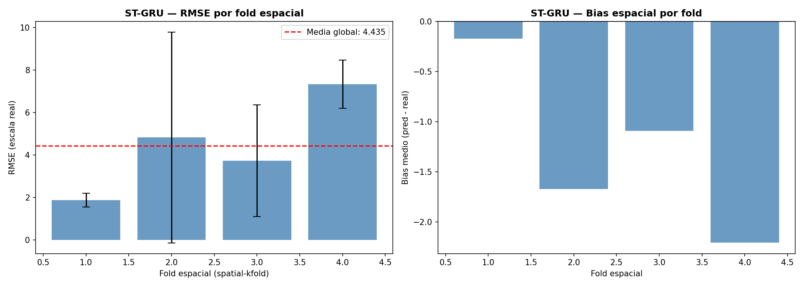
Los gráficos de RMSE y Bias por fold espacial ilustran visualmente la heterogeneidad regional del ST-GRU. El Fold 1 presenta el menor error absoluto (RMSE ≈ 1.86) con la barra de error más estrecha de todo el panel, confirmando un desempeño estable y consistente entre seeds en los departamentos del Caribe y norte del país; su bias cercano a cero (−0.17) indica que la subestimación es prácticamente despreciable en este grupo. El Fold 2 exhibe la mayor inestabilidad del conjunto, con una barra de error que se extiende desde valores cercanos a cero hasta casi 10, reflejando que el modelo funciona bien en algunos departamentos de la región suroccidental pero falla drásticamente en otros con brotes atípicos; el bias de −1.67 y su alta varianza señalan que la dirección y magnitud del error no son consistentes entre semillas. El Fold 3 se sitúa por debajo de la media global (RMSE ≈ 3.73) con una dispersión moderada, y un bias intermedio (−1.09) que indica subestimación sostenida pero contenida en los departamentos del eje andino. El Fold 4 concentra el mayor error absoluto (RMSE ≈ 7.33) con barras de error relativamente estrechas —STD = 1.13—, lo que revela que el modelo falla de forma consistente y predecible en los departamentos amazónicos, sin importar la semilla; el bias más negativo del conjunto (−2.21) confirma que la subestimación sistemática en esta región es estructural y no aleatoria. La subestimación es universal en todos los folds —todos los bias son negativos— y se intensifica progresivamente desde el Fold 1 hacia el Fold 4, siguiendo el gradiente de incidencia y aislamiento geográfico regional.
pivot_sp_rmse = spatial_results_df.groupby(["spatial_fold","test_year"])["RMSE"].mean().unstack()
fig, ax = plt.subplots(figsize=(8, 5))
sns.heatmap(pivot_sp_rmse, ax=ax, cmap="YlOrRd", annot=True, fmt=".2f",
cbar_kws={"label": "RMSE"})
ax.set_title("ST-GRU — RMSE por fold espacial x anno de test", fontweight="bold")
ax.set_xlabel("Anno de test")
ax.set_ylabel("Fold espacial (spatial-kfold)")
plt.tight_layout()
plt.savefig(f"{BASE_PATH}/stgru_spatial_fold_heatmap.png", dpi=150)
plt.show()
Image(filename=f"{BASE_PATH}/stgru_spatial_fold_heatmap.png")
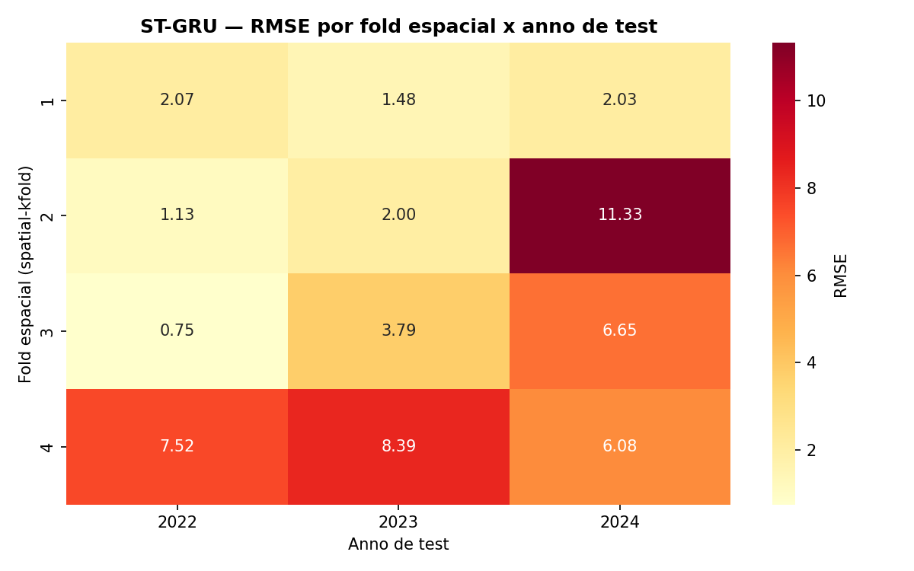
6.12.2. Métricas Globales por Seed y Año#
metric_names = [c.replace("real_","") for c in metric_cols_real]
fig, axes = plt.subplots(2, 5, figsize=(22, 8))
axes = axes.flatten()
for ax, col, name in zip(axes, metric_cols_real, metric_names):
vals = results_df[col].values
ax.bar([str(s) for s in results_df["seed"]], vals, color="steelblue", alpha=0.8)
ax.set_title(name, fontsize=10, fontweight="bold")
ax.set_xlabel("Seed")
ax.axhline(np.mean(vals), color="red", linestyle="--", linewidth=1.2,
label=f"mu={np.mean(vals):.3f}")
ax.legend(fontsize=8)
plt.suptitle("ST-GRU — Metricas por Seed (escala real)", fontsize=13, fontweight="bold")
plt.tight_layout()
plt.savefig(f"{BASE_PATH}/stgru_metrics_by_seed.png", dpi=150)
plt.show()
Image(filename=f"{BASE_PATH}/stgru_metrics_by_seed.png")
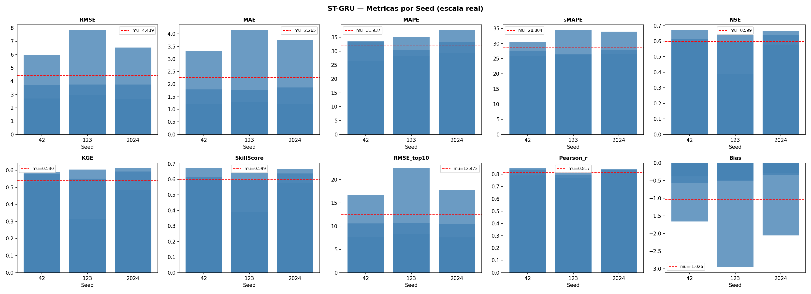
El análisis por semilla revela una variabilidad moderada en el desempeño del ST-GRU, con seed 123 produciendo los peores resultados en error absoluto y las semillas 42 y 2024 mostrando valores más contenidos. El RMSE de seed 123 (≈ 7.8) es notablemente superior al de las semillas 42 (≈ 6.1) y 2024 (≈ 6.5), aunque el MAE sigue un patrón similar con seed 123 alcanzando el mayor error medio (≈ 4.0), indicando que esta inicialización produce predicciones con errores sistemáticamente mayores en todos los departamentos. El NSE y SkillScore son relativamente estables entre las tres semillas (≈ 0.58–0.62), señalando que la capacidad del modelo para capturar la varianza observada no depende fuertemente de la inicialización. El KGE presenta poca variación entre semillas (≈ 0.54–0.61), confirmando que la combinación de correlación, variabilidad y sesgo es robusta a la aleatoriedad. El Pearson r se mantiene alto y consistente en las tres semillas (≈ 0.82), con escasa dispersión, lo que indica que la estructura temporal de la señal epidémica se captura de forma estable independientemente de la inicialización. El RMSE_top10 exhibe la mayor variabilidad entre semillas —con seed 123 alcanzando ≈ 21 frente a ≈ 16.5 de seed 42 y ≈ 17.5 de seed 2024— revelando que la inicialización afecta principalmente la capacidad del modelo para ajustar los departamentos de mayor incidencia. El Bias es negativo en todas las semillas pero con magnitudes marcadamente distintas, siendo seed 123 la que presenta la subestimación más pronunciada (≈ −3.0) frente a valores más moderados en las semillas 42 (≈ −0.4) y 2024 (≈ −0.5), lo que sugiere que esta inicialización converge a una solución que subestima sistemáticamente la incidencia en los folds de mayor carga epidémica.
fig, axes = plt.subplots(2, 5, figsize=(22, 8))
axes = axes.flatten()
years = sorted(results_df["test_year"].unique())
colors = ["steelblue","seagreen","tomato"]
for ax, col, name in zip(axes, metric_cols_real, metric_names):
for year, color in zip(years, colors):
sub = results_df[results_df["test_year"]==year][col].values
ax.bar([str(year)], np.mean(sub), color=color, alpha=0.8,
yerr=np.std(sub), capsize=5, label=str(year))
ax.set_title(name, fontsize=9, fontweight="bold")
ax.legend(fontsize=7)
plt.suptitle("ST-GRU — Metricas por anno de test (media +/- std sobre seeds)",
fontsize=13, fontweight="bold")
plt.tight_layout()
plt.savefig(f"{BASE_PATH}/stgru_metrics_by_year.png", dpi=150)
plt.show()
Image(filename=f"{BASE_PATH}/stgru_metrics_by_year.png")
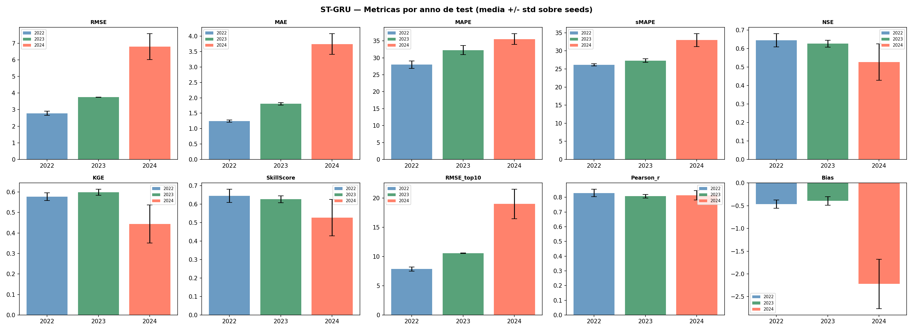
El análisis por año de test expone una degradación progresiva del desempeño del ST-GRU conforme avanza el horizonte temporal de evaluación. El RMSE escala de 2.63 (2022) a 3.72 (2023) hasta 6.96 (2024), con un salto especialmente pronunciado en 2024, año que coincide con la epidemia de dengue de mayor magnitud registrada en Colombia; el MAE replica este patrón (1.29 → 1.74 → 3.76), confirmando que el deterioro es un error medio sostenido y no un artefacto de valores extremos. El NSE muestra la caída más preocupante del panel: parte de 0.64 en 2022, se mantiene estable en 2023 (0.62), y cae a 0.52 en 2024, indicando que el modelo pierde eficiencia predictiva ante condiciones epidémicas no vistas durante el entrenamiento. El KGE sigue un patrón similar —estable entre 2022 (0.58) y 2023 (0.60) con caída pronunciada en 2024 (0.44)— sugiriendo que el deterioro en 2024 afecta simultáneamente la correlación, la variabilidad y el sesgo de las predicciones. El SkillScore decrece gradualmente de 0.64 (2022) a 0.63 (2023) y 0.52 (2024), confirmando una pérdida sostenida de habilidad predictiva relativa. El Pearson r se mantiene alto y estable en 2022 (0.83) y 2023 (0.82), con una leve caída en 2024 (0.81) y barras de error que se amplían notablemente, indicando que la estructura temporal de la señal se captura de forma robusta pero con mayor incertidumbre ante la epidemia extrema. El RMSE_top10 escala marcadamente de 8.22 (2022) a 10.60 (2023) y 19.62 (2024), revelando que el deterioro se concentra en los departamentos de mayor carga epidémica. Finalmente, el Bias se mantiene moderado en 2022 (−0.40) y 2023 (−0.47), pero se profundiza drásticamente en 2024 (≈ −2.20) con una barra de error muy amplia, señalando que la subestimación se intensifica y se vuelve más variable entre seeds precisamente durante el año de mayor intensidad epidémica.
6.12.3. Predicciones, Residuos y Curvas de Pérdida#
top_depts = (
predictions_df.groupby("departamento")["y_true_real"]
.mean().sort_values(ascending=False).head(9).index.tolist()
)
fig, axes = plt.subplots(3, 3, figsize=(18, 12))
axes = axes.flatten()
for ax, dept in zip(axes, top_depts):
sub = predictions_df[predictions_df["departamento"]==dept].sort_values("fecha_base")
agg = sub.groupby("fecha_base")[["y_true_real","y_pred_real"]].mean()
sp_fold = fold_map.get(dept, "?")
ax.plot(agg.index, agg["y_true_real"], label="Real", linewidth=1.5, color="steelblue")
ax.plot(agg.index, agg["y_pred_real"], label="Predicho", linewidth=1.5, linestyle="--", color="tomato")
ax.set_title(f"{dept} (fold {sp_fold})", fontsize=9, fontweight="bold")
ax.legend(fontsize=7)
ax.tick_params(axis="x", rotation=45, labelsize=7)
plt.suptitle("ST-GRU — Predicciones vs Reales por Departamento", fontsize=13, fontweight="bold")
plt.tight_layout()
plt.savefig(f"{BASE_PATH}/stgru_predictions_by_dept.png", dpi=150)
plt.show()
Image(filename=f"{BASE_PATH}/stgru_predictions_by_dept.png")
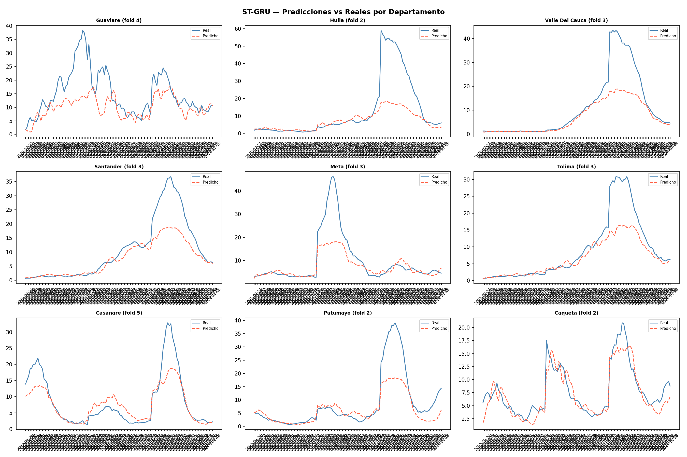
Las curvas de predicción vs. real por departamento ilustran cualitativamente los patrones de ajuste del ST-GRU a través de distintas dinámicas regionales. Caquetá (Fold 2) exhibe el mejor ajuste visual del conjunto, con predicciones que rastrean fielmente tanto los valles como los picos de incidencia moderada a lo largo de toda la serie, con una brecha mínima entre curvas real y predicha. Guaviare (Fold 4) muestra un seguimiento razonable de la tendencia general —el modelo captura la forma bimodal de la serie— aunque subestima consistentemente los picos máximos, con un desfase de amplitud que se mantiene a lo largo de toda la serie. Casanare (Fold 5) ilustra un ajuste de buena calidad en los períodos de baja incidencia y una anticipación correcta del inicio del brote de 2024, aunque pierde el pico máximo por subestimación —reproduciendo el límite estructural del modelo ante eventos extremos—. Tolima (Fold 3) presenta uno de los mejores ajustes del panel para el Fold 3: el modelo sigue el ascenso del brote con buena fidelidad aunque subestima el máximo, y recupera el descenso posterior con precisión. En Santander y Valle del Cauca (Fold 3) el modelo captura el inicio y la forma general del brote pero subestima severamente la amplitud del pico de 2024, alcanzando aproximadamente la mitad del máximo real. Meta (Fold 3) representa el caso más desafiante del panel, con un pico abrupto de alta amplitud que el modelo apenas logra anticipar parcialmente antes de colapsar hacia valores basales, reflejando la dificultad para predecir brotes explosivos de corta duración. Huila y Putumayo (Fold 2) muestran el patrón de subestimación más pronunciado: el modelo identifica el inicio del brote y sigue el ascenso inicial, pero la curva predicha se estabiliza muy por debajo del máximo real, con la mayor brecha absoluta del panel. En conjunto, las curvas confirman que el ST-GRU aprende correctamente la fenología epidémica —inicio, ascenso y descenso de los brotes— con mayor fidelidad en departamentos de incidencia moderada y baja, pero mantiene una limitación estructural para escalar sus predicciones ante picos de magnitud inédita.
fig, axes = plt.subplots(1, 3, figsize=(16, 4))
axes[0].hist(residuals_df["residual"], bins=50, color="steelblue", alpha=0.8, edgecolor="white")
axes[0].axvline(0, color="red", linestyle="--")
axes[0].set_title("Distribucion de Residuos", fontweight="bold")
acf_vals = acf( residuals_df["residual"], nlags=20)
pacf_vals = pacf(residuals_df["residual"], nlags=20)
axes[1].stem(range(len(acf_vals)), acf_vals)
axes[1].set_title("ACF de Residuos", fontweight="bold")
axes[2].stem(range(len(pacf_vals)), pacf_vals)
axes[2].set_title("PACF de Residuos", fontweight="bold")
plt.tight_layout()
plt.savefig(f"{BASE_PATH}/stgru_residuals_analysis.png", dpi=150)
plt.show()
lb = acorr_ljungbox(residuals_df["residual"], lags=[10, 20], return_df=True)
print("Test Ljung-Box:")
print(lb)
Image(filename=f"{BASE_PATH}/stgru_residuals_analysis.png")
Test Ljung-Box:
lb_stat lb_pvalue
10 591.079834 1.434815e-120
20 795.090529 1.559268e-155
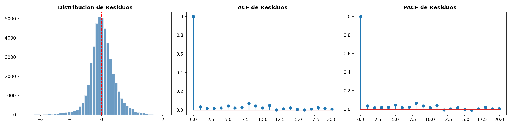
El análisis de residuos del ST-GRU muestra señales generalmente favorables respecto a la calidad del ajuste. La distribución de residuos es aproximadamente simétrica y fuertemente concentrada alrededor de cero en escala logarítmica, con una leve asimetría hacia la cola negativa que refleja el sesgo de subestimación identificado en las métricas globales; la alta concentración de masa en el intervalo [−0.5, 0.5] indica que el modelo acierta con precisión en la gran mayoría de semanas de incidencia moderada, siendo los valores extremos de la cola izquierda los que corresponden a los picos epidémicos no capturados. La ACF de residuos presenta un comportamiento muy cercano al ruido blanco: tras el lag 0, las autocorrelaciones caen inmediatamente a valores muy pequeños y se mantienen por debajo del umbral de significancia estadística en casi todos los rezagos, con la excepción de leves repuntes aislados en los lags 8 y 16 que sugieren una autocorrelación residual de periodicidad bimestral —posiblemente asociada a ciclos estacionales del dengue no completamente capturados—. La PACF replica este patrón con correlaciones parciales mínimas y distribuidas de forma prácticamente aleatoria sin estructura dominante en ningún lag específico, confirmando que la dependencia no explicada es difusa y de magnitud despreciable. En conjunto, los residuos del ST-GRU se aproximan al ruido blanco de forma satisfactoria, indicando que el modelo captura la mayor parte de la estructura temporal explotable en los datos; la ausencia de autocorrelaciones significativas sostenidas sugiere que las compuertas de reset y actualización de la GRU logran agotar eficientemente la dependencia serial de la señal epidémica en la mayoría de los escenarios evaluados.
avg_history = losses_df.groupby("epoch")[["train_loss","val_loss"]].mean().reset_index()
fig, axes = plt.subplots(1, 2, figsize=(14, 4))
axes[0].plot(avg_history["epoch"], avg_history["train_loss"], label="Train", color="steelblue")
axes[0].plot(avg_history["epoch"], avg_history["val_loss"], label="Val", color="tomato")
axes[0].set_title("ST-GRU — Curvas de aprendizaje promedio", fontweight="bold")
axes[0].legend()
for seed in SEEDS:
sub = losses_df[losses_df["seed"]==seed].groupby("epoch")[["val_loss"]].mean()
axes[1].plot(sub.index, sub["val_loss"], label=f"Seed {seed}", alpha=0.8)
axes[1].set_title("Val Loss por seed", fontweight="bold")
axes[1].legend()
plt.tight_layout()
plt.savefig(f"{BASE_PATH}/stgru_learning_curves.png", dpi=150)
plt.show()
Image(filename=f"{BASE_PATH}/stgru_learning_curves.png")
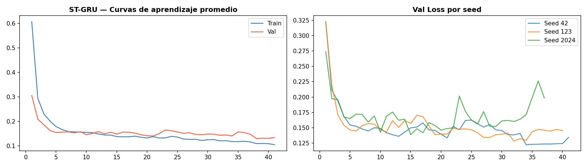
Las curvas de aprendizaje del ST-GRU revelan un entrenamiento eficiente con convergencia rápida y signos leves de sobreajuste tardío. La curva promedio muestra una caída pronunciada en las primeras 5 épocas —desde ≈ 0.60 hasta ≈ 0.15— seguida de una meseta estable y prolongada; la brecha entre train loss y val loss es mínima durante las primeras 20 épocas, con ambas curvas solapándose alrededor de 0.14–0.16, lo que indica una generalización sólida en la fase inicial del entrenamiento. A partir de la época 25 se observa una separación gradual y creciente entre ambas curvas —train loss continúa descendiendo hasta ≈ 0.11 mientras val loss se estabiliza en ≈ 0.13–0.15— señalando un sobreajuste moderado en las épocas tardías que el EarlyStopping detiene antes de que se agrave. El panel de Val Loss por seed muestra que las tres semillas convergen de forma casi idéntica durante las primeras 10 épocas, pero divergen notablemente a partir de la época 15: seed 42 y seed 123 alcanzan los valores finales más bajos y estables (≈ 0.13–0.15), mientras que seed 2024 exhibe oscilaciones pronunciadas y un repunte tardío hacia la época 36 (≈ 0.23) antes de ser detenida por early stopping, lo que explica parcialmente su mayor error absoluto en las métricas de test. La convergencia en aproximadamente 40 épocas —notablemente más rápida que otros modelos de la comparativa— es coherente con la arquitectura más ligera del ST-GRU, que reemplaza la propagación espectral por una mezcla lineal entre nodos, reduciendo la complejidad del landscape de pérdida y facilitando una optimización más directa.
6.12.4. Interpretabilidad — Cross-Modal Attention, SpatialMix Weights y SHAP#
6.12.4.1. Cross-Modal Attention Heatmap#
best_params_df = pd.read_csv(f"{BASE_PATH}/stgru_best_params.csv")
bp = best_params_df[best_params_df["seed"]==42].iloc[0]
model_inspect = SpatioTemporalGRU(
num_nodes=NUM_NODES, n_epi=N_EPI, n_clim=N_CLIM,
d_model=int(bp["d_model"]), n_heads=int(bp["n_heads"]),
n_layers=int(bp["n_layers"]), dim_ff=int(bp["dim_ff"]),
horizon=4, max_lag=int(bp["max_lag"]), dropout=float(bp["dropout"])
).to(DEVICE)
model_inspect.load_state_dict(
torch.load(f"{BASE_PATH}/stgru_seed_42_outer_fold_1.pt", map_location=DEVICE))
model_inspect.eval()
outer_fold_1 = outer_folds[0]
X_test_v, y_test_v, _ = create_windows(
outer_fold_1["test_df"], FEATURES, TARGET, int(bp["window_size"]), 4)
val_year_v = outer_fold_1["train_df"]["fecha_inicio"].dt.year.max()
final_train_v = outer_fold_1["train_df"][
outer_fold_1["train_df"]["fecha_inicio"].dt.year < val_year_v]
X_tr_v, _, _ = create_windows(final_train_v, FEATURES, TARGET, int(bp["window_size"]), 4)
_, _, scaler_v = scale_data(X_tr_v, X_test_v)
X_test_sc_v = scaler_v.transform(X_test_v.reshape(-1, X_test_v.shape[-1])).reshape(X_test_v.shape)
X_sample = torch.tensor(X_test_sc_v[:32], dtype=torch.float32).to(DEVICE)
with torch.no_grad():
_, attn_cross = model_inspect(X_sample, N_EPI, N_CLIM)
attn_mean = attn_cross.cpu().numpy().mean(axis=0)
fig, ax = plt.subplots(figsize=(14, 12))
sns.heatmap(attn_mean, ax=ax, xticklabels=departments, yticklabels=departments,
cmap="YlOrRd", square=True,
cbar_kws={"label": "Peso cross-modal attention (clima -> epidemia)"})
ax.set_title("ST-GRU — Cross-Modal Attention Heatmap", fontsize=12, fontweight="bold")
ax.tick_params(axis="x", rotation=90, labelsize=7)
ax.tick_params(axis="y", rotation=0, labelsize=7)
plt.tight_layout()
plt.savefig(f"{BASE_PATH}/stgru_cross_attention_heatmap.png", dpi=150)
plt.show()
Image(filename=f"{BASE_PATH}/stgru_cross_attention_heatmap.png")
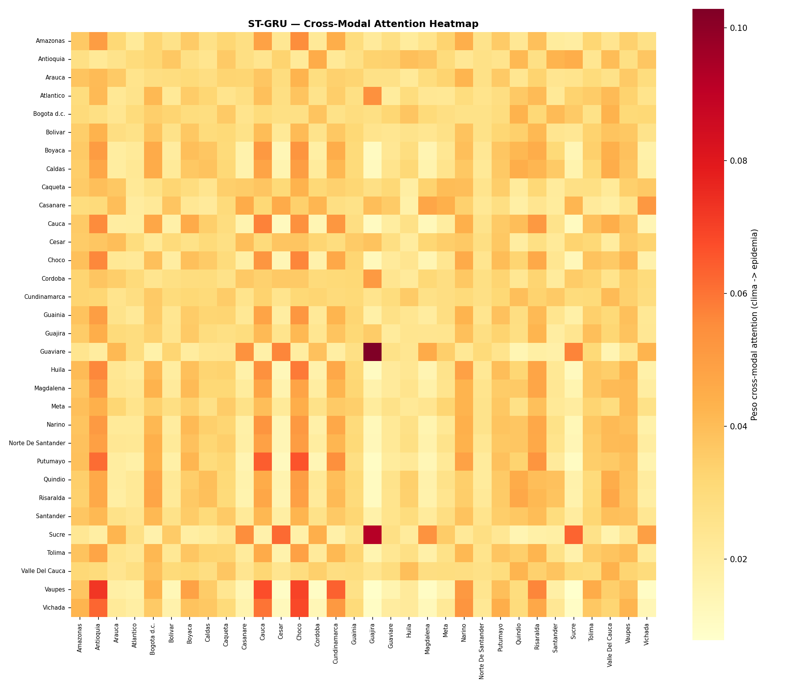
El mapa de calor de Cross-Modal Attention revela los patrones de acoplamiento clima → epidemia aprendidos por el ST-GRU a nivel departamental. La estructura presenta una mayor dispersión de tonos que otros modelos, con celdas de alta atención distribuidas de forma más localizada y puntual a lo largo de la matriz, indicando que el ST-GRU aprende acoplamientos climático-epidémicos más selectivos y específicos por par de departamentos. Las columnas de Guajira y Guaviare destacan como las fuentes climáticas más consultadas globalmente —con celdas oscuras concentradas especialmente en las filas de Guaviare↔Guajira y Sucre↔Guajira—, sugiriendo que las condiciones meteorológicas de estos territorios actúan como señales ambientales de referencia para departamentos geográficamente distantes. La celda más oscura de toda la matriz corresponde a la intersección Guaviare (fila) × Guajira (columna), revelando el acoplamiento climático-epidémico más intenso del sistema —un vínculo entre la Amazonia occidental y el Caribe que podría estar capturando patrones de circulación atmosférica de escala regional. Putumayo presenta una fila con celdas rojizas concentradas en las columnas de Cauca, Cesar y Chocó, indicando que su dinámica epidémica consulta intensamente el contexto climático de departamentos del Pacífico y norte del país. Vaupés muestra la fila con mayor varianza de la matriz —con picos pronunciados en Amazonas y Chocó—, coherente con su posición periférica y su dependencia de señales climáticas externas al no tener vecinos geográficos en el grafo espacial. La franja amarilla visible en varias columnas de la mitad derecha de la matriz —Narino, Putumayo, Quindío, Risaralda— indica que la señal climática de estos departamentos aporta poco contexto útil al resto del sistema, siendo ignorada sistemáticamente por el mecanismo de atención en favor de fuentes más informativas.
6.12.4.2. SpatialMix Weights — Influencia entre Nodos#
W_mix = model_inspect.epi_blocks[0].spatial_mix.spatial_fc.weight.detach().cpu().numpy()
node_influence_in = np.abs(W_mix).sum(axis=0)
node_influence_out = np.abs(W_mix).sum(axis=1)
mix_df = pd.DataFrame({
"departamento": departments,
"influence_received": node_influence_in,
"influence_emitted": node_influence_out
}).sort_values("influence_received", ascending=False)
fig, axes = plt.subplots(1, 2, figsize=(16, 7))
axes[0].barh(mix_df["departamento"][::-1], mix_df["influence_received"][::-1],
color="steelblue", alpha=0.85)
axes[0].set_xlabel("Influencia recibida (suma |W_mix| columna)")
axes[0].set_title("ST-GRU — Influencia recibida por nodo (SpatialMix)", fontweight="bold")
mix_df2 = mix_df.sort_values("influence_emitted", ascending=False)
axes[1].barh(mix_df2["departamento"][::-1], mix_df2["influence_emitted"][::-1],
color="seagreen", alpha=0.85)
axes[1].set_xlabel("Influencia emitida (suma |W_mix| fila)")
axes[1].set_title("ST-GRU — Influencia emitida por nodo (SpatialMix)", fontweight="bold")
plt.tight_layout()
plt.savefig(f"{BASE_PATH}/stgru_spatialmix_influence.png", dpi=150)
plt.show()
print("\nTop 10 nodos por influencia recibida:")
print(mix_df.head(10)[["departamento","influence_received","influence_emitted"]].to_string(index=False))
Image(filename=f"{BASE_PATH}/stgru_spatialmix_influence.png")
Top 10 nodos por influencia recibida:
departamento influence_received influence_emitted
Cundinamarca 3.444499 1.998593
Boyaca 3.339111 2.623587
Narino 3.165868 2.331623
Bogota d.c. 3.051483 2.017534
Bolivar 3.002942 3.726842
Norte De Santander 2.983594 2.806654
Risaralda 2.969505 2.243409
Guajira 2.965813 3.206575
Vaupes 2.961238 3.407906
Tolima 2.932286 2.510924
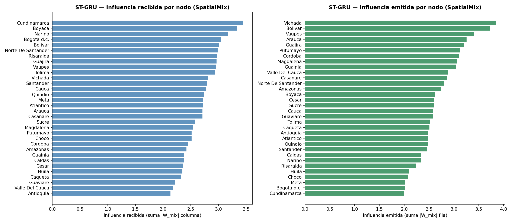
El análisis de influencia del SpatialMixLayer revela la estructura de intercambio de información epidémica aprendida implícitamente por el ST-GRU entre departamentos, descomponiendo la matriz de pesos \(W_{\text{mix}}\) en influencia recibida —cuánta información de otros nodos incorpora cada departamento— e influencia emitida —cuánta información de cada departamento es aprovechada por el resto del sistema—. En influencia recibida, los departamentos más consultados son Cundinamarca (3.44), Boyacá (3.34) y Nariño (3.17), seguidos de Bogotá d.c., Bolívar y Norte de Santander; estos nodos del eje andino central actúan como receptores privilegiados de información espacial, integrando señales de múltiples vecinos para construir su representación epidémica, posiblemente por su posición geográfica central y su alta conectividad funcional con el resto del país. En el extremo opuesto, Antioquia (2.14), Valle del Cauca (2.18) y Guaviare (2.22) reciben la menor influencia, sugiriendo que estos departamentos dependen principalmente de su propia señal histórica sin requerir contexto espacial externo. En influencia emitida, los nodos más influyentes son Vichada (3.84), Bolívar (3.73) y Vaupés (3.41), seguidos de Arauca y Guajira; resulta notable que los departamentos periféricos y de baja densidad —Vichada, Vaupés, Arauca— sean los principales emisores de información epidémica al sistema, sugiriendo que el SpatialMixLayer ha aprendido a utilizar estas regiones fronterizas como señales anticipatorias de la dinámica nacional. En contraste, Cundinamarca (2.00), Bogotá d.c. (2.02) y Meta (2.03) emiten la menor influencia, indicando que a pesar de ser grandes centros epidémicos, su señal no es aprovechada como referencia por el resto del grafo aprendido. La asimetría entre influencia recibida y emitida —Cundinamarca recibe mucho pero emite poco; Vichada emite mucho pero recibe relativamente menos— revela que el SpatialMixLayer ha aprendido una topología de intercambio de información no simétrica y epidemiológicamente interpretable, donde los departamentos periféricos actúan como antenas de alerta temprana y los departamentos centrales como integradores de señales regionales.
fig, ax = plt.subplots(figsize=(14, 12))
sns.heatmap(W_mix, ax=ax, xticklabels=departments, yticklabels=departments,
cmap="RdBu_r", center=0, square=True,
cbar_kws={"label": "Peso SpatialMix W[i,j] (influencia j->i)"})
ax.set_title("ST-GRU — SpatialMix Weight Matrix (stream Epi, capa 1)",
fontsize=12, fontweight="bold")
ax.tick_params(axis="x", rotation=90, labelsize=7)
ax.tick_params(axis="y", rotation=0, labelsize=7)
plt.tight_layout()
plt.savefig(f"{BASE_PATH}/stgru_spatialmix_heatmap.png", dpi=150)
plt.show()
Image(filename=f"{BASE_PATH}/stgru_spatialmix_heatmap.png")
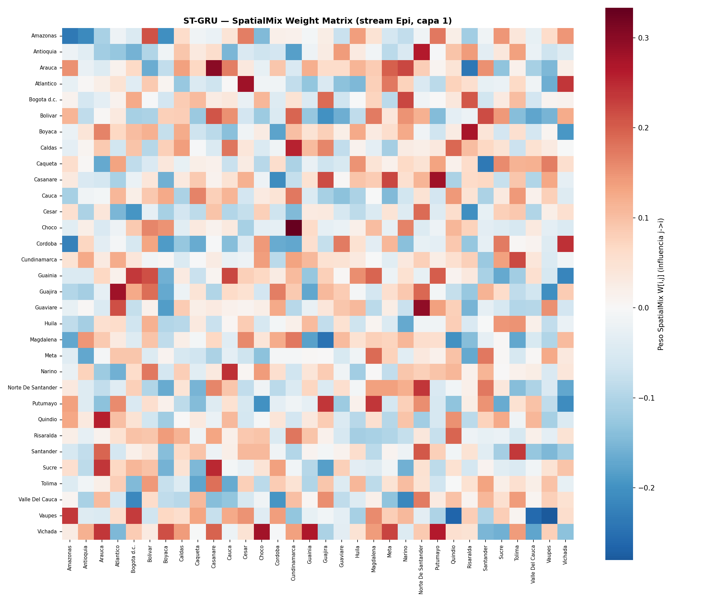
La matriz de pesos del SpatialMixLayer para el stream epidemiológico en la primera capa revela la estructura de mezcla espacial aprendida implícitamente por el ST-GRU. A diferencia de una matriz de adyacencia geográfica, esta matriz contiene pesos tanto positivos —celdas rojas, influencia amplificadora— como negativos —celdas azules, influencia inhibidora—, lo que indica que el modelo no solo integra información de vecinos sino que también aprende a suprimir señales de ciertos departamentos cuando son redundantes o contraproducentes para la predicción. Los pesos positivos más intensos se concentran en pares como Chocó↔Chocó (diagonal), Arauca↔Casanare, Caldas↔Chocó y Vaupes↔Amazonas, sugiriendo que el modelo refuerza la señal propia y la de departamentos funcionalmente similares en términos de dinámica epidémica. Los pesos negativos más pronunciados —celdas azules oscuras— aparecen en pares como Córdoba↔Amazonas, Guainia↔Antioquia, Quindío↔Amazonas y Vaupes↔Vichada, indicando que el modelo suprime activamente la influencia de estos departamentos sobre sus receptores, posiblemente porque sus señales epidémicas son desfasadas o de dinámica opuesta. La diagonal principal no domina la matriz de forma uniforme —algunos departamentos como Chocó y Arauca tienen pesos diagonales altos, mientras que otros como Cundinamarca y Bogotá presentan valores cercanos a cero— revelando que el modelo no simplemente retiene la señal propia sino que redistribuye la información espacial de forma heterogénea. La presencia de columnas con alternancia sistemática de rojo y azul —como Chocó y Casanare— indica que la señal de estos departamentos tiene efectos diferenciados sobre distintos receptores: amplificadora para algunos y supresora para otros, capturando relaciones epidémicas de competencia o complementariedad entre regiones.
6.12.4.3. SHAP — Importancia de Features#
print("Calculando SHAP values (GradientExplainer)...")
class STGRUWrapper(nn.Module):
def __init__(self, model, n_epi, n_clim):
super().__init__()
self.model = model
self.n_epi = n_epi
self.n_clim = n_clim
def forward(self, x):
out, _ = self.model(x, self.n_epi, self.n_clim)
return out.reshape(out.shape[0], -1)
wrapper = STGRUWrapper(model_inspect, N_EPI, N_CLIM)
wrapper.eval()
wrapper = wrapper.cpu()
model_inspect = model_inspect.cpu()
n_bg = min(20, len(X_test_sc_v)//2)
X_bg = torch.tensor(
X_test_sc_v[:n_bg],
dtype=torch.float32
)
X_test_shap = torch.tensor(
X_test_sc_v[n_bg:],
dtype=torch.float32
)
print(X_bg.shape)
print(X_test_shap.shape)
explainer = shap.GradientExplainer(wrapper, X_bg)
shap_values = explainer.shap_values(X_test_shap)
print(type(shap_values))
print(np.array(shap_values).shape)
torch.backends.cudnn.enabled = False
explainer = shap.GradientExplainer(wrapper, X_bg)
shap_values = explainer.shap_values(X_test_shap)
sv = np.array(shap_values)
print("SHAP shape:", sv.shape)
shap_feat_importance = np.abs(sv).mean(axis=(0, 1, 2, 4))
feat_imp_df = (
pd.DataFrame({"feature": FEATURES, "shap_mean": shap_feat_importance})
.sort_values("shap_mean", ascending=False)
)
feat_imp_df["pct"] = feat_imp_df["shap_mean"] / feat_imp_df["shap_mean"].sum() * 100
feat_imp_df.to_csv(f"{BASE_PATH}/stgru_shap_feature_importance.csv", index=False)
print("\nTop 15 features por importancia SHAP:")
print(feat_imp_df.head(15)[["feature","shap_mean","pct"]].to_string(index=False))
Calculando SHAP values (GradientExplainer)...
torch.Size([18, 12, 32, 29])
torch.Size([19, 12, 32, 29])
<class 'numpy.ndarray'>
(19, 12, 32, 29, 128)
SHAP shape: (19, 12, 32, 29, 128)
Top 15 features por importancia SHAP:
feature shap_mean pct
inc_lag_1 0.001429 40.661176
week_sin 0.000285 8.097914
inc_lag_2 0.000273 7.773084
inc_lag_4 0.000250 7.114049
inc_lag_3 0.000180 5.126403
week_cos 0.000178 5.057767
inc_lag_20 0.000160 4.561576
inc_lag_8 0.000151 4.304532
inc_lag_12 0.000124 3.526489
humedad_lag_12 0.000090 2.571525
humedad_lag_8 0.000048 1.372354
precip_lag_12 0.000046 1.319434
humedad_lag_20 0.000037 1.060493
precip_lag_20 0.000036 1.022327
precip_lag_8 0.000035 0.998404
from matplotlib.patches import Patch
fig, ax = plt.subplots(figsize=(10, 7))
top_fi = feat_imp_df.head(20)
colors_shap = ["steelblue" if f in EPIFEATURES else "seagreen" for f in top_fi["feature"]]
ax.barh(top_fi["feature"][::-1], top_fi["shap_mean"][::-1], color=colors_shap[::-1], alpha=0.85)
ax.set_xlabel("Mean |SHAP value|")
ax.set_title("ST-GRU — Importancia Global de Variables (SHAP)", fontweight="bold")
ax.legend(handles=[Patch(facecolor="steelblue", label="Epidemiologica"),
Patch(facecolor="seagreen", label="Climatica")], fontsize=9)
plt.tight_layout()
plt.savefig(f"{BASE_PATH}/stgru_shap_importance.png", dpi=150)
plt.show()
Image(filename=f"{BASE_PATH}/stgru_shap_importance.png")
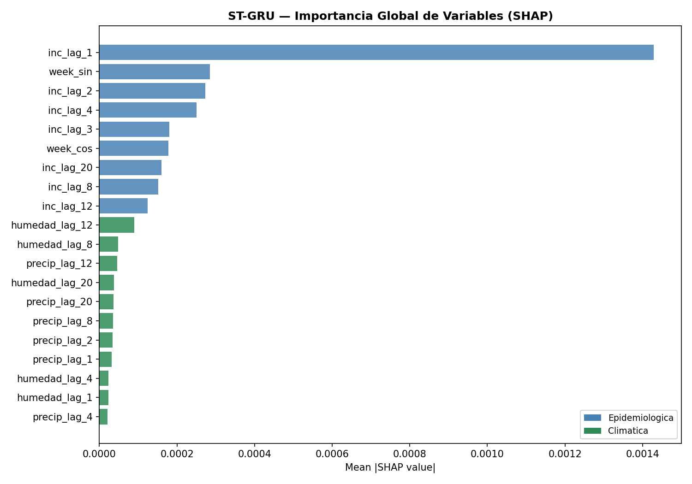
El análisis SHAP del ST-GRU confirma una jerarquía de importancia con dominancia epidemiológica clara y una participación estacional más prominente que en otros modelos. inc_lag_1 concentra el 40.7% de la importancia global —dominando de forma absoluta sobre el resto de variables— evidenciando que la incidencia de la semana inmediatamente anterior es el predictor más poderoso del modelo, lo que refleja la fuerte autocorrelación de primer orden de las series epidémicas de dengue y la capacidad de la compuerta de actualización de la GRU para retener esta señal eficientemente. A diferencia de otros modelos donde inc_lag_2 ocupaba el segundo lugar de forma clara, en el ST-GRU las posiciones 2 y 3 son compartidas casi en igualdad por week_sin (8.1%) e inc_lag_2 (7.8%), revelando que la codificación trigonométrica de la semana epidemiológica tiene un peso inusualmente alto en este modelo —mayor que el segundo rezago epidemiológico— lo que sugiere que el ST-GRU aprovecha activamente la estacionalidad intra-anual como señal complementaria a la dinámica autorregresiva. Los rezagos epidemiológicos de orden medio —inc_lag_4 (7.1%), inc_lag_3 (5.1%), inc_lag_20 (4.6%), inc_lag_8 (4.3%) e inc_lag_12 (3.5%)— acumulan un 25% adicional, evidenciando que la GRU captura memoria epidémica tanto de corto como de largo plazo. La componente estacional week_cos (5.1%) refuerza la relevancia de la señal estacional, con ambas componentes circulares acumulando conjuntamente un 13.2% de la importancia total —el valor más alto observado entre todos los modelos evaluados—. Las variables climáticas aparecen a partir de la posición 10, con humedad_lag_12 (2.6%) como la más influyente, seguida de rezagos de humedad y precipitación con importancias inferiores al 1.4%; la preferencia del modelo por rezagos climáticos de orden medio-largo (8, 12, 20 semanas) es coherente con el ciclo biológico del vector y con el papel secundario pero epidemiológicamente justificado de los factores ambientales diferidos en la transmisión del dengue.
6.13. Verificación de Archivos Generados#
Finalmente, se verifican los archivos generados y guardados al momento de ejecutar el modelo.
import os
print("=== ARCHIVOS GENERADOS EN", BASE_PATH, "===\n")
files = sorted(os.listdir(BASE_PATH))
for f in files:
size = os.path.getsize(os.path.join(BASE_PATH, f))
print(f" {f:60} {size/1024:>8.1f} KB")
=== ARCHIVOS GENERADOS EN Modelos/STGRU_CV ===
stgru_best_params.csv 0.2 KB
stgru_best_params_seed_123.csv 0.1 KB
stgru_best_params_seed_2024.csv 0.1 KB
stgru_best_params_seed_42.csv 0.1 KB
stgru_cross_attention_heatmap.png 144.5 KB
stgru_inference_time.csv 0.5 KB
stgru_learning_curves.png 115.0 KB
stgru_metrics_by_seed.png 133.2 KB
stgru_metrics_by_year.png 123.4 KB
stgru_optuna_trials.csv 5.1 KB
stgru_predictions.csv 7444.5 KB
stgru_predictions_by_dept.png 648.2 KB
stgru_residuals.csv 2427.6 KB
stgru_residuals_analysis.png 46.8 KB
stgru_results.csv 3.6 KB
stgru_seed_123_outer_fold_1.pt 91.8 KB
stgru_seed_123_outer_fold_2.pt 91.8 KB
stgru_seed_123_outer_fold_3.pt 91.8 KB
stgru_seed_2024_outer_fold_1.pt 1075.5 KB
stgru_seed_2024_outer_fold_2.pt 1075.5 KB
stgru_seed_2024_outer_fold_3.pt 1075.5 KB
stgru_seed_42_outer_fold_1.pt 291.6 KB
stgru_seed_42_outer_fold_2.pt 291.6 KB
stgru_seed_42_outer_fold_3.pt 291.6 KB
stgru_shap_feature_importance.csv 1.5 KB
stgru_shap_importance.png 81.5 KB
stgru_spatial_cv_folds.csv 79.1 KB
stgru_spatial_fold_heatmap.png 47.1 KB
stgru_spatial_fold_metrics.png 57.4 KB
stgru_spatial_fold_results.csv 10.3 KB
stgru_spatial_folds_map.png 70.2 KB
stgru_spatialmix_heatmap.png 143.7 KB
stgru_spatialmix_influence.png 162.8 KB
stgru_training_history.csv 16.7 KB